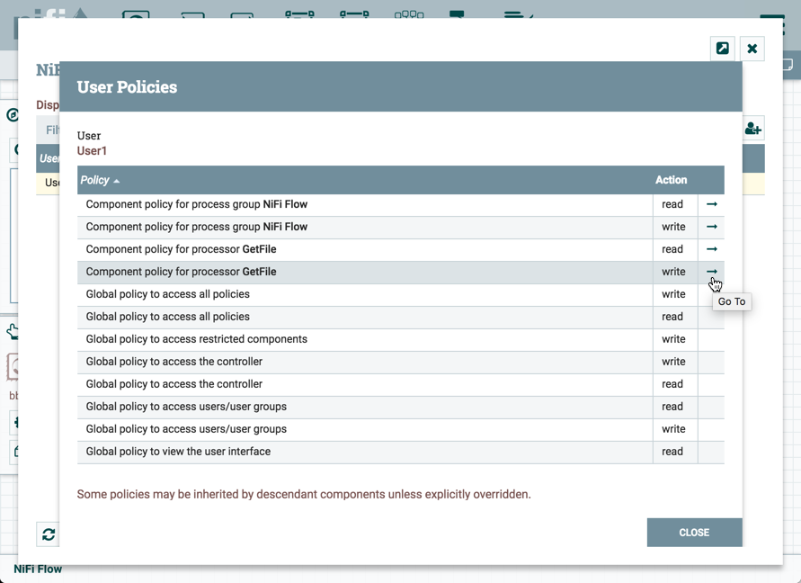
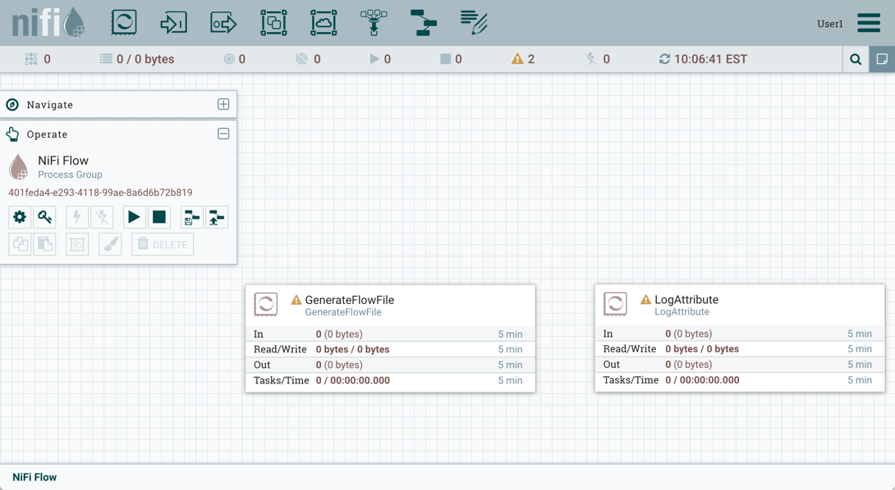
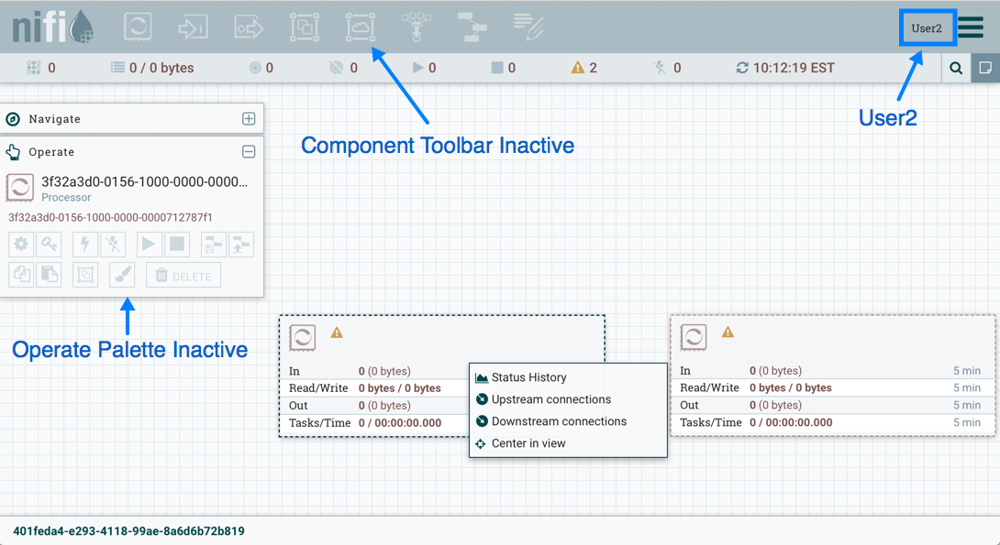
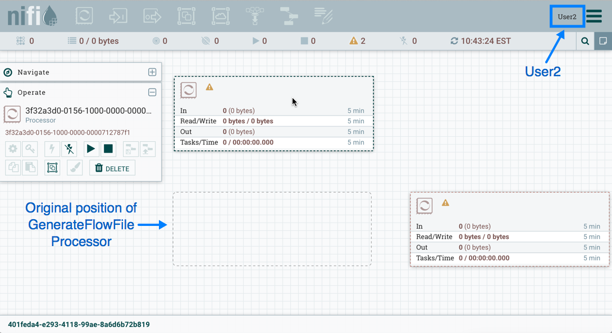
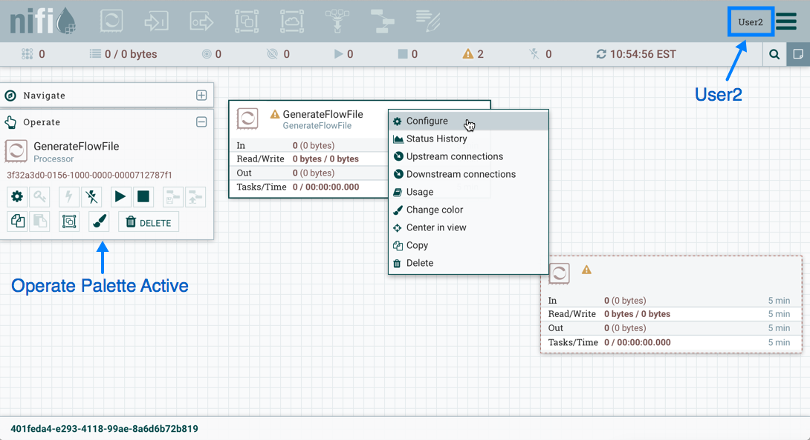
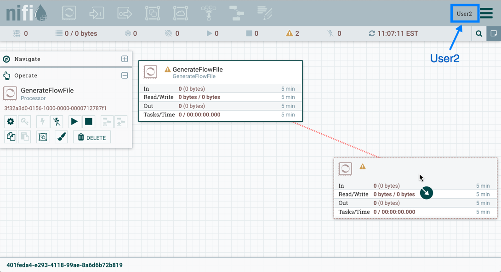
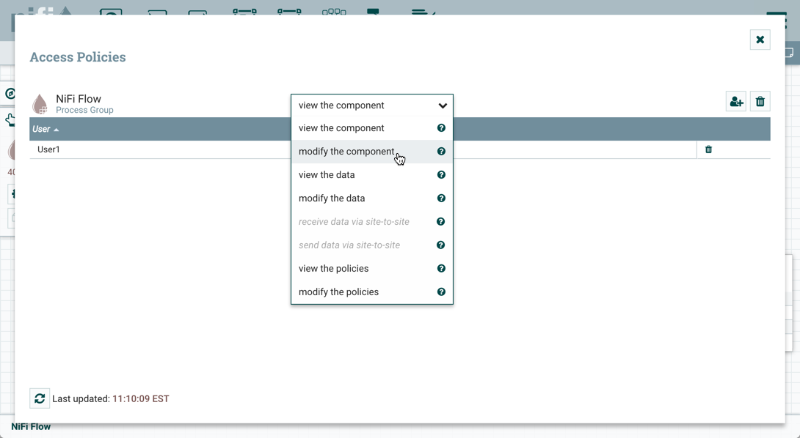
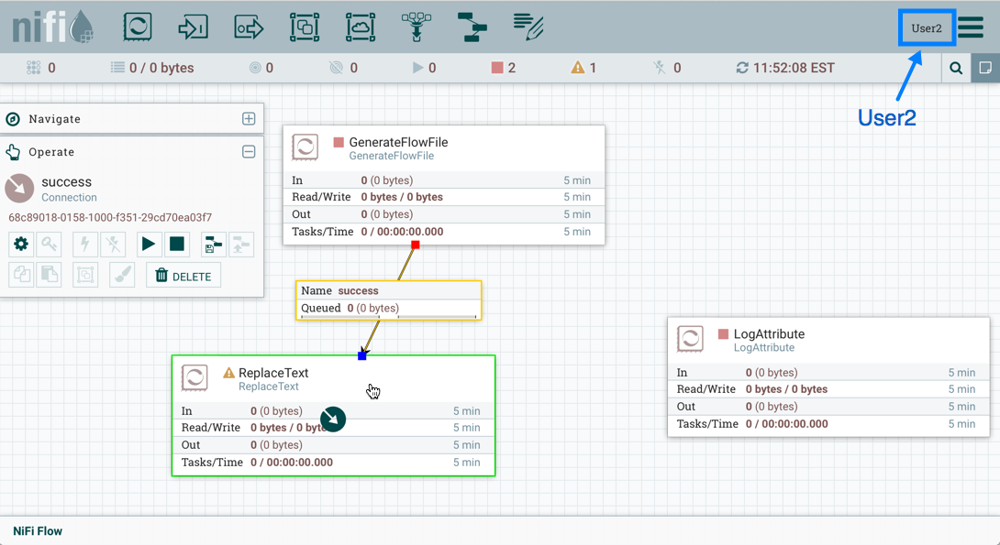

System Requirements
Apache NiFi can run on something as simple as a laptop, but it can also be clustered across many enterprise-class servers. Therefore, the amount of hardware and memory needed will depend on the size and nature of the dataflow involved. The data is stored on disk while NiFi is processing it. So NiFi needs to have sufficient disk space allocated for its various repositories, particularly the content repository, flowfile repository, and provenance repository (see the System Properties section for more information about these repositories). NiFi has the following minimum system requirements:
-
Requires Java 8 or newer
-
Supported Operating Systems:
-
Linux
-
Unix
-
Windows
-
Mac OS X
-
-
Supported Web Browsers:
-
Microsoft Edge: Current & (Current - 1)
-
Mozilla FireFox: Current & (Current - 1)
-
Google Chrome: Current & (Current - 1)
-
Safari: Current & (Current - 1)
-
Note Under sustained and extremely high throughput the CodeCache settings may need to be tuned to avoid sudden performance loss. See the Bootstrap Properties section for more information.
How to install and start NiFi
-
Linux/Unix/OS X
-
Decompress and untar into desired installation directory
-
Make any desired edits in files found under <installdir>/conf
-
At a minimum, we recommend editing the nifi.properties file and entering a password for the nifi.sensitive.props.key (see System Properties below)
-
-
From the <installdir>/bin directory, execute the following commands by typing ./nifi.sh <command>:
-
start: starts NiFi in the background
-
stop: stops NiFi that is running in the background
-
status: provides the current status of NiFi
-
run: runs NiFi in the foreground and waits for a Ctrl-C to initiate shutdown of NiFi
-
install: installs NiFi as a service that can then be controlled via
-
service nifi start
-
service nifi stop
-
service nifi status
-
-
-
-
Windows
-
Decompress into the desired installation directory
-
Make any desired edits in the files found under <installdir>/conf
-
At a minimum, we recommend editing the nifi.properties file and entering a password for the nifi.sensitive.props.key (see System Properties below)
-
-
Navigate to the <installdir>/bin directory
-
Double-click run-nifi.bat. This runs NiFi in the foreground and waits for a Ctrl-C to initiate shutdown of NiFi
-
To see the current status of NiFi, double-click status-nifi.bat
-
When NiFi first starts up, the following files and directories are created:
-
content_repository
-
database_repository
-
flowfile_repository
-
provenance_repository
-
work directory
-
logs directory
-
Within the conf directory, the flow.xml.gz file and the templates directory are created
See the System Properties section of this guide for more information about configuring NiFi repositories and configuration files.
Configuration Best Practices
| If you are running on Linux, consider these best practices. Typical Linux defaults are not necessarily well tuned for the needs of an IO intensive application like NiFi. For all of these areas, your distribution’s requirements may vary. Use these sections as advice, but consult your distribution-specific documentation for how best to achieve these recommendations. |
- Maximum File Handles
-
NiFi will at any one time potentially have a very large number of file handles open. Increase the limits by editing /etc/security/limits.conf to add something like
* hard nofile 50000 * soft nofile 50000
- Maximum Forked Processes
-
NiFi may be configured to generate a significant number of threads. To increase the allowable number edit /etc/security/limits.conf
* hard nproc 10000 * soft nproc 10000
And your distribution may require an edit to /etc/security/limits.d/90-nproc.conf by adding
* soft nproc 10000
- Increase the number of TCP socket ports available
-
This is particularly important if your flow will be setting up and tearing down a large number of sockets in small period of time.
sudo sysctl -w net.ipv4.ip_local_port_range="10000 65000"
- Set how long sockets stay in a TIMED_WAIT state when closed
-
You don’t want your sockets to sit and linger too long given that you want to be able to quickly setup and teardown new sockets. It is a good idea to read more about it but to adjust do something like
sudo sysctl -w net.ipv4.netfilter.ip_conntrack_tcp_timeout_time_wait="1"
- Tell Linux you never want NiFi to swap
-
Swapping is fantastic for some applications. It isn’t good for something like NiFi that always wants to be running. To tell Linux you’d like swapping off you can edit /etc/sysctl.conf to add the following line
vm.swappiness = 0
For the partitions handling the various NiFi repos turn off things like atime. Doing so can cause a surprising bump in throughput. Edit the /etc/fstab file and for the partition(s) of interest add the noatime option.
Security Configuration
NiFi provides several different configuration options for security purposes. The most important properties are those under the "security properties" heading in the nifi.properties file. In order to run securely, the following properties must be set:
| Property Name | Description |
|---|---|
|
Set to |
|
Filename of the Keystore that contains the server’s private key. |
|
The type of Keystore. Must be either |
|
The password for the Keystore. |
|
The password for the certificate in the Keystore. If not set, the value of |
|
Filename of the Truststore that will be used to authorize those connecting to NiFi. A secured instance with no Truststore will refuse all incoming connections. |
|
The type of the Truststore. Must be either |
|
The password for the Truststore. |
Once the above properties have been configured, we can enable the User Interface to be accessed over HTTPS instead of HTTP. This is accomplished
by setting the nifi.web.https.host and nifi.web.https.port properties. The nifi.web.https.host property indicates which hostname the server
should run on. If it is desired that the HTTPS interface be accessible from all network interfaces, a value of 0.0.0.0 should be used. To allow
admins to configure the application to run only on specific network interfaces, nifi.web.http.network.interface* or nifi.web.https.network.interface*
properties can be specified.
It is important when enabling HTTPS that the nifi.web.http.port property be unset.
|
Similar to nifi.security.needClientAuth, the web server can be configured to require certificate based client authentication for users accessing
the User Interface. In order to do this it must be configured to not support username/password authentication using Lightweight Directory Access Protocol (LDAP) or Kerberos. Either of these options
will configure the web server to WANT certificate based client authentication. This will allow it to support users with certificates and those without
that may be logging in with their credentials or those accessing anonymously. If username/password authentication and anonymous access are not configured,
the web server will REQUIRE certificate based client authentication. See User Authentication for more details.
Now that the User Interface has been secured, we can easily secure Site-to-Site connections and inner-cluster communications, as well. This is
accomplished by setting the nifi.remote.input.secure and nifi.cluster.protocol.is.secure properties, respectively, to true.
TLS Generation Toolkit
In order to facilitate the secure setup of NiFi, you can use the tls-toolkit command line utility to automatically generate the required keystores, truststore, and relevant configuration files. This is especially useful for securing multiple NiFi nodes, which can be a tedious and error-prone process.
Note: JKS keystores and truststores are recommended for NiFi. This tool allows the specification of other keystore types on the command line but will ignore a type of PKCS12 for use as the truststore because that format has some compatibility issues between BouncyCastle and Oracle implementations.
The tls-toolkit command line tool has two primary modes of operation:
-
Standalone — generates the certificate authority, keystores, truststores, and nifi.properties files in one command.
-
Client/Server mode — uses a Certificate Authority Server that accepts Certificate Signing Requests from clients, signs them, and sends the resulting certificates back. Both client and server validate the others identity through a shared secret.
Standalone
Standalone mode is invoked by running ./bin/tls-toolkit.sh standalone -h which prints the usage information along with descriptions of options that can be specified.
The most common options to specify are:
-
-n,--hostnamesThe comma-separated list of hostnames that youd like to generate certificates for. It can be specified multiple times. Range and instance patterns are supported. See below for details. -
-C,--clientCertDnThe DN that you’d like to generate a client certificate for. It can be specified multiple times. -
-f,--nifiPropertiesFileThe base nifi.properties file that the tool will update for each host. -
-o,--outputDirectoryThe directory to use for the resulting Certificate Authority files and NiFi configurations. A subdirectory will be made for each host.
Hostname Patterns:
-
Square brackets can be used in order to easily specify a range of hostnames. Example: [01-20]
-
Parentheses can be used in order to specify that more than one NiFi instance will run on the given host(s). Example: (5)
Examples:
Create 4 sets of keystore, truststore, nifi.properties for localhost along with a client certificate with the given DN:
bin/tls-toolkit.sh standalone -n 'localhost(4)' -C 'CN=username,OU=NIFI'
Create keystore, truststore, nifi.properties for 10 NiFi hostnames in each of 4 subdomains:
bin/tls-toolkit.sh standalone -n 'nifi[01-10].subdomain[1-4].domain'
Create 2 sets of keystore, truststore, nifi.properties for 10 NiFi hostnames in each of 4 subdomains along with a client certificate with the given DN:
bin/tls-toolkit.sh standalone -n 'nifi[01-10].subdomain[1-4].domain(2)' -C 'CN=username,OU=NIFI'
Client/Server
Client/Server mode relies on a long-running Certificate Authority (CA) to issue certificates. The CA can be stopped when youre not bringing nodes online.
Server
The CA server is invoked by running ./bin/tls-toolkit server -h prints the usage information along with descriptions of options that can be specified.
The most common options to specify are:
-
-f,--configJsonThe location of the json config (written after first run) -
-F,--useConfigJsonLoads all relevant configuration from the config json (configJson is the only other argument necessary) -
-t,--tokenThe token used to prevent man in the middle attacks (this should be a long, random value and needs to be known when invoking the client) -
-D,--dnThe DN for the CA
Client
The client can be used to request new Certificates from the CA. The client utility generates a keypair and Certificate Signing Request (CSR) and sends the CSR to the Certificate Authority. The client is invoked by running ./bin/tls-toolkit.sh client -h which prints the usage information along with descriptions of options that can be specified.
The most common options to specify are:
-
-f,--configJsonThe json config file -
-c,--certificateAuthorityHostnameThe hostname of the CA -
-D,--DNThe DN for the CSR (and Certificate) -
-t,--tokenThe token used to prevent man in the middle attacks (this should be a long, random value and needs to be the same one used to start the CA server) -
-T,--keyStoreTypeThe type of keystore to create (leave default for NiFi nodes, specify PKCS12 to create client cert)
After running the client you will have the CAs certificate, a keystore, a truststore, and a config.json with information about them as well as their passwords.
For a client certificate that can be easily imported into the browser, specify: -T PKCS12
User Authentication
NiFi supports user authentication via client certificates or via username/password. Username/password authentication is performed by a Login Identity Provider. The Login Identity Provider is a pluggable mechanism for authenticating users via their username/password. Which Login Identity Provider to use is configured in two properties in the nifi.properties file.
The nifi.login.identity.provider.configuration.file property specifies the configuration file for Login Identity Providers.
The nifi.security.user.login.identity.provider property indicates which of the configured Login Identity Provider should be
used. If this property is not configured, NiFi will not support username/password authentication and will require client
certificates for authenticating users over HTTPS. By default, this property is not configured meaning that username/password must be explicitly enabled.
A secured instance of NiFi cannot be accessed anonymously unless configured to use an LDAP or Kerberos Login Identity Provider, which in turn must be configured to explicitly allow anonymous access. Anonymous access is not currently possible by the default FileAuthorizer (see Authorizer Configuration), but is a future effort (NIFI-2730).
| NiFi does not perform user authentication over HTTP. Using HTTP, all users will be granted all roles. |
Lightweight Directory Access Protocol (LDAP)
Below is an example and description of configuring a Login Identity Provider that integrates with a Directory Server to authenticate users.
<provider>
<identifier>ldap-provider</identifier>
<class>org.apache.nifi.ldap.LdapProvider</class>
<property name="Authentication Strategy">START_TLS</property>
<property name="Manager DN"></property>
<property name="Manager Password"></property>
<property name="TLS - Keystore"></property>
<property name="TLS - Keystore Password"></property>
<property name="TLS - Keystore Type"></property>
<property name="TLS - Truststore"></property>
<property name="TLS - Truststore Password"></property>
<property name="TLS - Truststore Type"></property>
<property name="TLS - Client Auth"></property>
<property name="TLS - Protocol"></property>
<property name="TLS - Shutdown Gracefully"></property>
<property name="Referral Strategy">FOLLOW</property>
<property name="Connect Timeout">10 secs</property>
<property name="Read Timeout">10 secs</property>
<property name="Url"></property>
<property name="User Search Base"></property>
<property name="User Search Filter"></property>
<property name="Identity Strategy">USE_DN</property>
<property name="Authentication Expiration">12 hours</property>
</provider>
With this configuration, username/password authentication can be enabled by referencing this provider in nifi.properties.
nifi.security.user.login.identity.provider=ldap-provider
| Property Name | Description |
|---|---|
|
The duration of how long the user authentication is valid for. If the user never logs out, they will be required to log back in following this duration. |
|
How the connection to the LDAP server is authenticated. Possible values are ANONYMOUS, SIMPLE, LDAPS, or START_TLS. |
|
The DN of the manager that is used to bind to the LDAP server to search for users. |
|
The password of the manager that is used to bind to the LDAP server to search for users. |
|
Path to the Keystore that is used when connecting to LDAP using LDAPS or START_TLS. |
|
Password for the Keystore that is used when connecting to LDAP using LDAPS or START_TLS. |
|
Type of the Keystore that is used when connecting to LDAP using LDAPS or START_TLS (i.e. JKS or PKCS12). |
|
Path to the Truststore that is used when connecting to LDAP using LDAPS or START_TLS. |
|
Password for the Truststore that is used when connecting to LDAP using LDAPS or START_TLS. |
|
Type of the Truststore that is used when connecting to LDAP using LDAPS or START_TLS (i.e. JKS or PKCS12). |
|
Client authentication policy when connecting to LDAP using LDAPS or START_TLS. Possible values are REQUIRED, WANT, NONE. |
|
Protocol to use when connecting to LDAP using LDAPS or START_TLS. (i.e. TLS, TLSv1.1, TLSv1.2, etc). |
|
Specifies whether the TLS should be shut down gracefully before the target context is closed. Defaults to false. |
|
Strategy for handling referrals. Possible values are FOLLOW, IGNORE, THROW. |
|
Duration of connect timeout. (i.e. 10 secs). |
|
Duration of read timeout. (i.e. 10 secs). |
|
Space-separated list of URLs of the LDAP servers (i.e. ldap://<hostname>:<port>). |
|
Base DN for searching for users (i.e. CN=Users,DC=example,DC=com). |
|
Filter for searching for users against the User Search Base. (i.e. sAMAccountName={0}). The user specified name is inserted into {0}. |
|
Strategy to identify users. Possible values are USE_DN and USE_USERNAME. The default functionality if this property is missing is USE_DN in order to retain backward compatibility. USE_DN will use the full DN of the user entry if possible. USE_USERNAME will use the username the user logged in with. |
Kerberos
Below is an example and description of configuring a Login Identity Provider that integrates with a Kerberos Key Distribution Center (KDC) to authenticate users.
<provider>
<identifier>kerberos-provider</identifier>
<class>org.apache.nifi.kerberos.KerberosProvider</class>
<property name="Default Realm">NIFI.APACHE.ORG</property>
<property name="Kerberos Config File">/etc/krb5.conf</property>
<property name="Authentication Expiration">12 hours</property>
</provider>
With this configuration, username/password authentication can be enabled by referencing this provider in nifi.properties.
nifi.security.user.login.identity.provider=kerberos-provider
| Property Name | Description |
|---|---|
|
The duration of how long the user authentication is valid for. If the user never logs out, they will be required to log back in following this duration. |
|
Default realm to provide when user enters incomplete user principal (i.e. NIFI.APACHE.ORG). |
|
Absolute path to Kerberos client configuration file. |
See also Kerberos Service to allow single sign-on access via client Kerberos tickets.
Multi-Tenant Authorization
After you have configured NiFi to run securely and with an authentication mechanism, you must configure who has access to the system, and the level of their access. You can do this using multi-tenant authorization. Multi-tenant authorization enables multiple groups of users (tenants) to command, control, and observe different parts of the dataflow, with varying levels of authorization. When an authenticated user attempts to view or modify a NiFi resource, the system checks whether the user has privileges to perform that action. These privileges are defined by policies that you can apply system-wide or to individual components.
Authorizer Configuration
An authorizer grants users the privileges to manage users and policies by creating preliminary authorizations at startup.
Authorizers are configured using two properties in the nifi.properties file:
-
The
nifi.authorizer.configuration.fileproperty specifies the configuration file where authorizers are defined. By default, the authorizers.xml file located in the root installation conf directory is selected. -
The
nifi.security.user.authorizerproperty indicates which of the configured authorizers in the authorizers.xml file to use.
Authorizers.xml Setup
The authorizers.xml file is used to define and configure available authorizers. The default authorizer is the FileAuthorizer, however, you can develop additional authorizers as extensions. The FileAuthorizer has the following properties:
-
Authorizations File - The file where the FileAuthorizer stores policies. By default, the authorizations.xml in the conf directory is chosen.
-
Users File - The file where the FileAuthorizer stores users and groups. By default, the users.xml in the conf directory is chosen.
-
Initial Admin Identity - The identity of an initial admin user that is granted access to the UI and given the ability to create additional users, groups, and policies. This property is only used when there are no other users, groups, and policies defined.
-
Legacy Authorized Users File - The full path to an existing authorized-users.xml that is automatically converted to the multi-tenant authorization model. This property is only used when there are no other users, groups, and policies defined.
-
Node Identity - The identity of a NiFi cluster node. When clustered, a property for each node should be defined, so that every node knows about every other node. If not clustered, these properties can be ignored.
Initial Admin Identity (New NiFi Instance)
If you are setting up a secured NiFi instance for the first time, you must manually designate an Initial Admin Identity in the authorizers.xml file. This initial admin user is granted access to the UI and given the ability to create additional users, groups, and policies. The value of this property could be a DN (when using certificates or LDAP) or a Kerberos principal. If you are the NiFi administrator, add yourself as the Initial Admin Identity.
Here is an example LDAP entry using the name John Smith:
<authorizer>
<identifier>file-provider</identifier>
<class>org.apache.nifi.authorization.FileAuthorizer</class>
<property name="Authorizations File">./conf/authorizations.xml</property>
<property name="Users File">./conf/users.xml</property>
<property name="Initial Admin Identity">cn=John Smith,ou=people,dc=example,dc=com</property>
<property name="Legacy Authorized Users File"></property>
<!--
<property name="Node Identity 1"></property>
<property name="Node Identity 2"></property>
-->
</authorizer>
</authorizers>
Here is an example Kerberos entry using the name John Smith and realm NIFI.APACHE.ORG:
<authorizer>
<identifier>file-provider</identifier>
<class>org.apache.nifi.authorization.FileAuthorizer</class>
<property name="Authorizations File">./conf/authorizations.xml</property>
<property name="Users File">./conf/users.xml</property>
<property name="Initial Admin Identity">johnsmith@NIFI.APACHE.ORG</property>
<property name="Legacy Authorized Users File"></property>
<!--
<property name="Node Identity 1"></property>
<property name="Node Identity 2"></property>
-->
</authorizer>
</authorizers>
After you have edited and saved the authorizers.xml file, restart NiFi. The Initial Admin Identity user and administrative policies are added to the users.xml and authorizations.xml files during restart. Once NiFi starts, the Initial Admin Identity user is able to access the UI and begin managing users, groups, and policies.
| For a brand new secure flow, providing the "Initial Admin Identity" gives that user access to get into the UI and to manage users, groups and policies. But if that user wants to start modifying the flow, they need to grant themselves policies for the root process group. The system is unable to do this automatically because in a new flow the UUID of the root process group is not permanent until the flow.xml.gz is generated. If the NiFi instance is an upgrade from an existing flow.xml.gz or a 1.x instance going from unsecure to secure, then the "Initial Admin Identity" user is automatically given the privileges to modify the flow. |
Legacy Authorized Users (NiFi Instance Upgrade)
If you are upgrading from a 0.x NiFi instance, you can convert your previously configured users and roles to the multi-tenant authorization model. In the authorizers.xml file, specify the location of your existing authorized-users.xml file in the Legacy Authorized Users File property.
Here is an example entry:
<authorizers>
<authorizer>
<identifier>file-provider</identifier>
<class>org.apache.nifi.authorization.FileAuthorizer</class>
<property name="Authorizations File">./conf/authorizations.xml</property>
<property name="Users File">./conf/users.xml</property>
<property name="Initial Admin Identity"></property>
<property name="Legacy Authorized Users File">/Users/johnsmith/config_files/authorized-users.xml</property>
</authorizer>
</authorizers>
After you have edited and saved the authorizers.xml file, restart NiFi. Users and roles from the authorized-users.xml file are converted and added as identities and policies in the users.xml and authorizations.xml files. Once the application starts, users who previously had a legacy Administrator role can access the UI and begin managing users, groups, and policies.
The following tables summarize the global and component policies assigned to each legacy role if the NiFi instance has an existing flow.xml.gz:
Global Access Policies
| Admin | DFM | Monitor | Provenance | NiFi | Proxy | |
|---|---|---|---|---|---|---|
view the UI |
* |
* |
* |
|||
access the controller - view |
* |
* |
* |
* |
||
access the controller - modify |
* |
|||||
query provenance |
* |
|||||
access restricted components |
* |
|||||
access all policies - view |
* |
|||||
access all policies - modify |
* |
|||||
access users/user groups - view |
* |
|||||
access users/user groups - modify |
* |
|||||
retrieve site-to-site details |
* |
|||||
view system diagnostics |
* |
* |
||||
proxy user requests |
* |
|||||
access counters |
Component Access Policies on the Root Process Group
| Admin | DFM | Monitor | Provenance | NiFi | Proxy | |
|---|---|---|---|---|---|---|
view the component |
* |
* |
* |
|||
modify the component |
* |
|||||
view the data |
* |
* |
* |
|||
modify the data |
* |
* |
For details on the individual policies in the table, see Access Policies.
| NiFi fails to restart if values exist for both the Initial Admin Identity and Legacy Authorized Users File properties. You can specify only one of these values to initialize authorizations. |
| Do not manually edit the authorizations.xml file. Create authorizations only during initial setup and afterwards using the NiFi UI. |
Cluster Node Identities
If you are running NiFi in a clustered environment, you must specify the identities for each node. The authorization policies required for the nodes to communicate are created during startup.
For example, if you are setting up a 2 node cluster with the following DNs for each node:
cn=nifi-1,ou=people,dc=example,dc=com cn=nifi-2,ou=people,dc=example,dc=com
<authorizer>
<identifier>file-provider</identifier>
<class>org.apache.nifi.authorization.FileAuthorizer</class>
<property name="Authorizations File">./conf/authorizations.xml</property>
<property name="Users File">./conf/users.xml</property>
<property name="Initial Admin Identity">johnsmith@NIFI.APACHE.ORG</property>
<property name="Legacy Authorized Users File"></property>
<property name="Node Identity 1">cn=nifi-1,ou=people,dc=example,dc=com</property>
<property name="Node Identity 2">cn=nifi-2,ou=people,dc=example,dc=com</property>
</authorizer>
</authorizers>
| In a cluster, all nodes must have the same authorizations.xml and users.xml. The only exception is if a node has empty authorizations.xml and user.xml files prior to joining the cluster. In this scenario, the node inherits them from the cluster during startup. |
Now that initial authorizations have been created, additional users, groups and authorizations can be created and managed in the NiFi UI.
Configuring Users & Access Policies
This section describes:
-
How to create users and groups
-
How access policies are used to define authorizations
-
How to view policies that are set on a user
-
How to configure access policies by walking through specific examples
| Instructions requiring interaction with the UI assume the application is being accessed by User1, a user with administrator privileges, such as the Initial Admin Identity user or a converted legacy admin user (see Authorizers.xml Setup). |
Creating Users and Groups
From the UI, select Users from the Global Menu. This opens a dialog to create and manage users and groups.

Click the Add icon (). To create a user, enter the Identity information relevant to the authentication method chosen to secure your NiFi instance. Click OK.
To create a group, select the Group radio button, enter the name of the group and select the users to be included in the group. Click OK.
Access Policies
You can manage the ability for users and groups to view or modify NiFi resources using access policies. There are two types of access policies that can be applied to a resource:
-
View — If a view policy is created for a resource, only the users or groups that are added to that policy are able to see the details of that resource.
-
Modify — If a resource has a modify policy, only the users or groups that are added to that policy can change the configuration of that resource.
You can create and apply access policies on both global and component levels.
Global Access Policies
Global access policies govern the following system level authorizations:
| Policy | Privilege | Global Menu Selection |
|---|---|---|
view the UI |
Allow users to view the UI |
N/A |
access the controller |
Allows users to view/modify the controller including Reporting Tasks, Controller Services, and Nodes in the Cluster |
Controller Settings |
query provenance |
Allows users to submit a Provenance Search and request Event Lineage |
Data Provenance |
access restricted components |
Allows users to create/modify restricted components assuming otherwise sufficient permissions |
N/A |
access all policies |
Allows users to view/modify the policies for all components |
Policies |
access users/user groups |
Allows users to view/modify the users and user groups |
Users |
retrieve site-to-site details |
Allows other NiFi instances to retrieve Site-To-Site details |
N/A |
view system diagnostics |
Allows users to view System Diagnostics |
Summary |
proxy user requests |
Allows proxy machines to send requests on the behalf of others |
N/A |
access counters |
Allows users to view/modify Counters |
Counters |
Component Level Access Policies
Component level access policies govern the following component level authorizations:
| Policy | Privilege |
|---|---|
view the component |
Allows users to view component configuration details |
modify the component |
Allows users to modify component configuration details |
view the data |
Allows user to view metadata and content for this component through provenance data and flowfile queues in outbound connections |
modify the data |
Allows user to empty flowfile queues in outbound connections and submit replays |
view the policies |
Allows users to view the list of users who can view/modify a component |
modify the policies |
Allows users to modify the list of users who can view/modify a component |
receive data via site-to-site |
Allows a port to receive data from NiFi instances |
send data via site-to-site |
Allows a port to send data from NiFi instances |
| You can apply access policies to all component types except connections. Connection authorizations are inferred by the individual access policies on the source and destination components of the connection, as well as the access policy of the process group containing the components. This is discussed in more detail in the Creating a Connection and Editing a Connection examples below. |
| In order to access List Queue or Delete Queue for a connection, a user requires permission to the "view the data" and "modify the data" policies on the component. In a clustered environment, all nodes must be be added to these policies as well, as a user request could be replicated through any node in the cluster. |
Access Policy Inheritance
An administrator does not need to manually create policies for every component in the dataflow. To reduce the amount of time admins spend on authorization management, policies are inherited from parent resource to child resource. For example, if a user is given access to view and modify a process group, that user can also view and modify the components in the process group. Policy inheritance enables an administrator to assign policies at one time and have the policies apply throughout the entire dataflow.
You can override an inherited policy (as described in the Moving a Processor example below). Overriding a policy removes the inherited policy, breaking the chain of inheritance from parent to child, and creates a replacement policy to add users as desired. Inherited policies and their users can be restored by deleting the replacement policy.
| View the policies and modify the policies component-level access policies are an exception to this inherited behavior.When a user is added to either policy, they are added to the current list of administrators.They do not override higher level administrators.For this reason, only component specific administrators are displayed for the view the policies and modify the policies" access policies. |
| You cannot modify the users/groups on an inherited policy. Users and groups can only be added or removed from a parent policy or an override policy. |
Viewing Policies on Users
From the UI, select Users from the Global Menu. This opens the NiFi Users dialog.
Select the View User Policies icon ().

The User Policies window displays the global and component level policies that have been set for the chosen user. Select the Go To icon () to navigate to that component in the canvas.
Access Policy Configuration Examples
The most effective way to understand how to create and apply access policies is to walk through some common examples. The following scenarios assume User1 is an administrator and User2 is a newly added user that has only been given access to the UI.
Lets begin with two processors on the canvas as our starting point: GenerateFlowFile and LogAttribute.

User1 can add components to the dataflow and is able to move, edit and connect all processors. The details and properties of the root process group and processors are visible to User1.

User1 wants to maintain their current privileges to the dataflow and its components.
User2 is unable to add components to the dataflow or move, edit, or connect components. The details and properties of the root process group and processors are hidden from User2.

Moving a Processor
To allow User2 to move the GenerateFlowFile processor in the dataflow and only that processor, User1 performs the following steps:
-
Select the GenerateFlowFile processor so that it is highlighted.
-
Select the Access Policies icon (
 ) from the Operate palette and the Access Policies dialog opens.
) from the Operate palette and the Access Policies dialog opens. -
Select modify the component from the policy drop-down.
 The modify the component policy that currently exists on the processor (child) is the modify the component policy inherited from the root process group (parent) on which User1 has privileges.
The modify the component policy that currently exists on the processor (child) is the modify the component policy inherited from the root process group (parent) on which User1 has privileges. -
Select the Override link in the policy inheritance message. When creating the replacement policy, you are given a choice to override with a copy of the inherited policy or an empty policy.
Select the Override button to create a copy.
-
On the replacement policy that is created, select the Add User icon (). Find or enter User2 in the User Identity field and select OK.

With these changes, User1 maintains the ability to move both processors on the canvas. User2 can now move the GenerateFlowFile processor but cannot move the LogAttribute processor.

Editing a Processor
In the Moving a Processor example above, User2 was added to the modify the component policy for GenerateFlowFile. Without the ability to view the processor properties, User2 is unable to modify the processors configuration. In order to edit a component, a user must be on both the view the component and modify the component policies. To implement this, User1 performs the following steps:
-
Select the GenerateFlowFile processor.
-
Select the Access Policies icon (
) from the Operate palette and the Access Policies dialog opens. -
Select "view the component from the policy drop-down.
 The view the component policy that currently exists on the processor (child) is the "view the component policy inherited from the root process group (parent) on which User1 has privileges.
The view the component policy that currently exists on the processor (child) is the "view the component policy inherited from the root process group (parent) on which User1 has privileges. -
Select the Override link in the policy inheritance message, keep the default of Copy policy and select the Override button.
-
On the override policy that is created, select the Add User icon (). Find or enter User2 in the User Identity field and select OK.
With these changes, User1 maintains the ability to view and edit the processors on the canvas. User2 can now view and edit the GenerateFlowFile processor.

Creating a Connection
With the access policies configured as discussed in the previous two examples, User1 is able to connect GenerateFlowFile to LogAttribute:
User2 cannot make the connection:

This is because:
-
User2 does not have modify access on the process group.
-
Even though User2 has view and modify access to the source component (GenerateFlowFile), User2 does not have an access policy on the destination component (LogAttribute).
To allow User2 to connect GenerateFlowFile to LogAttribute, as User1:
-
Select the root process group. The Operate palette is updated with details for the root process group.
-
Select the Access Policies icon (
) from the Operate palette and the Access Policies dialog opens. -
Select "modify the component from the policy drop-down. 
-
Select the Add User icon (). Find or enter User2 and select OK.
By adding User2 to the modify the component policy on the process group, User2 is added to the modify the component policy on the LogAttribute processor by policy inheritance. To confirm this, highlight the LogAttribute processor and select the Access Policies icon () from the Operate palette:

With these changes, User2 can now connect the GenerateFlowFile processor to the LogAttribute processor.

Editing a Connection
Assume User1 or User2 adds a ReplaceText processor to the root process group:
User1 can select and change the existing connection (between GenerateFlowFile to LogAttribute) to now connect GenerateFlowFile to ReplaceText:

User 2 is unable to perform this action.

To allow User2 to connect GenerateFlowFile to ReplaceText, as User1:
-
Select the root process group. The Operate palette is updated with details for the root process group.
-
Select the Access Policies icon (
). -
Select "view the component from the policy drop-down.
-
Select the Add User icon (). Find or enter User2 and select OK.
Being added to both the view and modify policies for the process group, User2 can now connect the GenerateFlowFile processor to the ReplaceText processor.

Encryption Configuration
This section provides an overview of the capabilities of NiFi to encrypt and decrypt data.
The EncryptContent processor allows for the encryption and decryption of data, both internal to NiFi and integrated with external systems, such as openssl and other data sources and consumers.
Key Derivation Functions
Key Derivation Functions (KDF) are mechanisms by which human-readable information, usually a password or other secret information, is translated into a cryptographic key suitable for data protection. For further information, read the Wikipedia entry on Key Derivation Functions.
Currently, KDFs are ingested by CipherProvider implementations and return a fully-initialized Cipher object to be used for encryption or decryption. Due to the use of a CipherProviderFactory, the KDFs are not customizable at this time. Future enhancements will include the ability to provide custom cost parameters to the KDF at initialization time. As a work-around, CipherProvider instances can be initialized with custom cost parameters in the constructor but this is not currently supported by the CipherProviderFactory.
Here are the KDFs currently supported by NiFi (primarily in the EncryptContent processor for password-based encryption (PBE)) and relevant notes:
-
NiFi Legacy KDF
-
The original KDF used by NiFi for internal key derivation for PBE, this is 1000 iterations of the MD5 digest over the concatenation of the password and 8 or 16 bytes of random salt (the salt length depends on the selected cipher block size).
-
This KDF is deprecated as of NiFi 0.5.0 and should only be used for backwards compatibility to decrypt data that was previously encrypted by a legacy version of NiFi.
-
-
OpenSSL PKCS#5 v1.5 EVP_BytesToKey
-
This KDF was added in v0.4.0.
-
This KDF is provided for compatibility with data encrypted using OpenSSL’s default PBE, known as
EVP_BytesToKey. This is a single iteration of MD5 over the concatenation of the password and 8 bytes of random ASCII salt. OpenSSL recommends usingPBKDF2for key derivation but does not expose the library method necessary to the command-line tool, so this KDF is still the de facto default for command-line encryption.
-
-
Bcrypt
-
This KDF was added in v0.5.0.
-
Bcrypt is an adaptive function based on the Blowfish cipher. This KDF is strongly recommended as it automatically incorporates a random 16 byte salt, configurable cost parameter (or "work factor"), and is hardened against brute-force attacks using GPGPU (which share memory between cores) by requiring access to "large" blocks of memory during the key derivation. It is less resistant to FPGA brute-force attacks where the gate arrays have access to individual embedded RAM blocks.
-
Because the length of a Bcrypt-derived key is always 184 bits, the complete output is then fed to a
SHA-512digest and truncated to the desired key length. This provides the benefit of the avalanche effect on the formatted input. -
The recommended minimum work factor is 12 (212 key derivation rounds) (as of 2/1/2016 on commodity hardware) and should be increased to the threshold at which legitimate systems will encounter detrimental delays (see schedule below or use
BcryptCipherProviderGroovyTest#testDefaultConstructorShouldProvideStrongWorkFactor()to calculate safe minimums). -
The salt format is
$2a$10$ABCDEFGHIJKLMNOPQRSTUV. The salt is delimited by$and the three sections are as follows:-
2a- the version of the format. An extensive explanation can be found here. NiFi currently uses2afor all salts generated internally. -
10- the work factor. This is actually the log2 value, so the total iteration count would be 210 in this case. -
ABCDEFGHIJKLMNOPQRSTUV- the 22 character, Base64-encoded, unpadded, raw salt value. This decodes to a 16 byte salt used in the key derivation.
-
-
-
Scrypt
-
This KDF was added in v0.5.0.
-
Scrypt is an adaptive function designed in response to
bcrypt. This KDF is recommended as it requires relatively large amounts of memory for each derivation, making it resistant to hardware brute-force attacks. -
The recommended minimum cost is
N=214,r=8,p=1 (as of 2/1/2016 on commodity hardware) and should be increased to the threshold at which legitimate systems will encounter detrimental delays (see schedule below or useScryptCipherProviderGroovyTest#testDefaultConstructorShouldProvideStrongParameters()to calculate safe minimums). -
The salt format is
$s0$e0101$ABCDEFGHIJKLMNOPQRSTUV. The salt is delimited by$and the three sections are as follows:-
s0- the version of the format. NiFi currently usess0for all salts generated internally. -
e0101- the cost parameters. This is actually a hexadecimal encoding ofN,r,pusing shifts. This can be formed/parsed usingScrypt#encodeParams()andScrypt#parseParameters().-
Some external libraries encode
N,r, andpseparately in the form$400$1$1$. A utility method is available atScryptCipherProvider#translateSalt()which will convert the external form to the internal form.
-
-
ABCDEFGHIJKLMNOPQRSTUV- the 12-44 character, Base64-encoded, unpadded, raw salt value. This decodes to a 8-32 byte salt used in the key derivation.
-
-
-
PBKDF2
-
This KDF was added in v0.5.0.
-
Password-Based Key Derivation Function 2 is an adaptive derivation function which uses an internal pseudorandom function (PRF) and iterates it many times over a password and salt (at least 16 bytes).
-
The PRF is recommended to be
HMAC/SHA-256orHMAC/SHA-512. The use of an HMAC cryptographic hash function mitigates a length extension attack. -
The recommended minimum number of iterations is 160,000 (as of 2/1/2016 on commodity hardware). This number should be doubled every two years (see schedule below or use
PBKDF2CipherProviderGroovyTest#testDefaultConstructorShouldProvideStrongIterationCount()to calculate safe minimums). -
This KDF is not memory-hard (can be parallelized massively with commodity hardware) but is still recommended as sufficient by NIST SP 800-132 (PDF) and many cryptographers (when used with a proper iteration count and HMAC cryptographic hash function).
-
-
None
-
This KDF was added in v0.5.0.
-
This KDF performs no operation on the input and is a marker to indicate the raw key is provided to the cipher. The key must be provided in hexadecimal encoding and be of a valid length for the associated cipher/algorithm.
-
Additional Resources
Salt and IV Encoding
Initially, the EncryptContent processor had a single method of deriving the encryption key from a user-provided password. This is now referred to as NiFiLegacy mode, effectively MD5 digest, 1000 iterations. In v0.4.0, another method of deriving the key, OpenSSL PKCS#5 v1.5 EVP_BytesToKey was added for compatibility with content encrypted outside of NiFi using the openssl command-line tool. Both of these Key Derivation Functions (KDF) had hard-coded digest functions and iteration counts, and the salt format was also hard-coded. With v0.5.0, additional KDFs are introduced with variable iteration counts, work factors, and salt formats. In addition, raw keyed encryption was also introduced. This required the capacity to encode arbitrary salts and Initialization Vectors (IV) into the cipher stream in order to be recovered by NiFi or a follow-on system to decrypt these messages.
For the existing KDFs, the salt format has not changed.
NiFi Legacy
The first 8 or 16 bytes of the input are the salt. The salt length is determined based on the selected algorithm’s cipher block length. If the cipher block size cannot be determined (such as with a stream cipher like RC4), the default value of 8 bytes is used. On decryption, the salt is read in and combined with the password to derive the encryption key and IV.

OpenSSL PKCS#5 v1.5 EVP_BytesToKey
OpenSSL allows for salted or unsalted key derivation. *Unsalted key derivation is a security risk and is not recommended.* If a salt is present, the first 8 bytes of the input are the ASCII string "Salted__" (0x53 61 6C 74 65 64 5F 5F) and the next 8 bytes are the ASCII-encoded salt. On decryption, the salt is read in and combined with the password to derive the encryption key and IV. If there is no salt header, the entire input is considered to be the cipher text.

For new KDFs, each of which allow for non-deterministic IVs, the IV must be stored alongside the cipher text. This is not a vulnerability, as the IV is not required to be secret, but simply to be unique for messages encrypted using the same key to reduce the success of cryptographic attacks. For these KDFs, the output consists of the salt, followed by the salt delimiter, UTF-8 string "NiFiSALT" (0x4E 69 46 69 53 41 4C 54) and then the IV, followed by the IV delimiter, UTF-8 string "NiFiIV" (0x4E 69 46 69 49 56), followed by the cipher text.

Java Cryptography Extension (JCE) Limited Strength Jurisdiction Policies
Because of US export regulations, default JVMs have limits imposed on the strength of cryptographic operations available to them. For example, AES operations are limited to 128 bit keys by default. While AES-128 is cryptographically safe, this can have unintended consequences, specifically on Password-based Encryption (PBE).
PBE is the process of deriving a cryptographic key for encryption or decryption from user-provided secret material, usually a password. Rather than a human remembering a (random-appearing) 32 or 64 character hexadecimal string, a password or passphrase is used.
A number of PBE algorithms provided by NiFi impose strict limits on the length of the password due to the underlying key length checks. Below is a table listing the maximum password length on a JVM with limited cryptographic strength.
| Algorithm | Max Password Length |
|---|---|
|
16 |
|
16 |
|
16 |
|
16 |
|
16 |
|
16 |
|
16 |
|
7 |
|
7 |
|
7 |
|
7 |
|
7 |
|
7 |
|
7 |
|
7 |
|
7 |
|
7 |
|
7 |
|
7 |
|
7 |
Allow Insecure Cryptographic Modes
By default, the Allow Insecure Cryptographic Modes property in EncryptContent processor settings is set to not-allowed. This means that if a password of fewer than 10 characters is provided, a validation error will occur. 10 characters is a conservative estimate and does not take into consideration full entropy calculations, patterns, etc.
On a JVM with limited strength cryptography, some PBE algorithms limit the maximum password length to 7, and in this case it will not be possible to provide a "safe" password. It is recommended to install the JCE Unlimited Strength Jurisdiction Policy files for the JVM to mitigate this issue.
If on a system where the unlimited strength policies cannot be installed, it is recommended to switch to an algorithm that supports longer passwords (see table above).
|
Allowing Weak Crypto
If it is not possible to install the unlimited strength jurisdiction policies, the |
It is preferable to request upstream/downstream systems to switch to keyed encryption or use a "strong" Key Derivation Function (KDF) supported by NiFi.
Encrypted Passwords in Configuration Files
In order to facilitate the secure setup of NiFi, you can use the encrypt-config command line utility to encrypt raw configuration values that NiFi decrypts in memory on startup. This extensible protection scheme transparently allows NiFi to use raw values in operation, while protecting them at rest. In the future, hardware security modules (HSM) and external secure storage mechanisms will be integrated, but for now, an AES encryption provider is the default implementation.
This is a change in behavior; prior to 1.0, all configuration values were stored in plaintext on the file system. POSIX file permissions were recommended to limit unauthorized access to these files
If no administrator action is taken, the configuration values remain unencrypted.
Encrypt-Config Tool
The encrypt-config command line tool (invoked as ./bin/encrypt-config.sh or bin\encrypt-config.bat) reads from a nifi.properties file with plaintext sensitive configuration values, prompts for a master password or raw hexadecimal key, and encrypts each value. It replaces the plain values with the protected value in the same file, or writes to a new nifi.properties file if specified.
The default encryption algorithm utilized is AES/GCM 128/256-bit. 128-bit is used if the JCE Unlimited Strength Cryptographic Jurisdiction Policy files are not installed, and 256-bit is used if they are installed.
You can use the following command line options with the encrypt-config tool:
-
-A,--newFlowAlgorithm <arg>The algorithm to use to encrypt the sensitive processor properties in flow.xml.gz -
-b,--bootstrapConf <arg>The bootstrap.conf file to persist master key -
-e,--oldKey <arg>The old raw hexadecimal key to use during key migration -
-f,--flowXml <arg>The flow.xml.gz file currently protected with old password (will be overwritten) -
-g,--outputFlowXml <arg>The destination flow.xml.gz file containing protected config values (will not modify input flow.xml.gz) -
-h,--helpPrints this usage message -
-i,--outputLoginIdentityProviders <arg>The destination login-identity-providers.xml file containing protected config values (will not modify input login-identity-providers.xml) -
-k,--key <arg>The raw hexadecimal key to use to encrypt the sensitive properties -
-l,--loginIdentityProviders <arg>The login-identity-providers.xml file containing unprotected config values (will be overwritten) -
-m,--migrateIf provided, the nifi.properties and/or login-identity-providers.xml sensitive properties will be re-encrypted with a new key -
-n,--niFiProperties <arg>The nifi.properties file containing unprotected config values (will be overwritten) -
-o,--outputNiFiProperties <arg>The destination nifi.properties file containing protected config values (will not modify input nifi.properties) -
-p,--password <arg>The password from which to derive the key to use to encrypt the sensitive properties -
-P,--newFlowProvider <arg>The security provider to use to encrypt the sensitive processor properties in flow.xml.gz -
-r,--useRawKeyIf provided, the secure console will prompt for the raw key value in hexadecimal form -
-s,--propsKey <arg>The password or key to use to encrypt the sensitive processor properties in flow.xml.gz -
-v,--verboseSets verbose mode (default false) -
-w,--oldPassword <arg>The old password from which to derive the key during migration -
-x,--encryptFlowXmlOnlyIf provided, the properties in flow.xml.gz will be re-encrypted with a new key but the nifi.properties and/or login-identity-providers.xml files will not be modified
As an example of how the tool works, assume that you have installed the tool on a machine supporting 256-bit encryption and with the following existing values in the nifi.properties file:
# security properties # nifi.sensitive.props.key=thisIsABadSensitiveKeyPassword nifi.sensitive.props.algorithm=PBEWITHMD5AND256BITAES-CBC-OPENSSL nifi.sensitive.props.provider=BC nifi.sensitive.props.additional.keys= nifi.security.keystore=/path/to/keystore.jks nifi.security.keystoreType=JKS nifi.security.keystorePasswd=thisIsABadKeystorePassword nifi.security.keyPasswd=thisIsABadKeyPassword nifi.security.truststore= nifi.security.truststoreType= nifi.security.truststorePasswd=
Enter the following arguments when using the tool:
encrypt-config.sh -b bootstrap.conf -k 0123456789ABCDEFFEDCBA98765432100123456789ABCDEFFEDCBA9876543210 -n nifi.properties
As a result, the nifi.properties file is overwritten with protected properties and sibling encryption identifiers (aes/gcm/256, the currently supported algorithm):
# security properties # nifi.sensitive.props.key=n2z+tTTbHuZ4V4V2||uWhdasyDXD4ZG2lMAes/vqh6u4vaz4xgL4aEbF4Y/dXevqk3ulRcOwf1vc4RDQ== nifi.sensitive.props.key.protected=aes/gcm/256 nifi.sensitive.props.algorithm=PBEWITHMD5AND256BITAES-CBC-OPENSSL nifi.sensitive.props.provider=BC nifi.sensitive.props.additional.keys= nifi.security.keystore=/path/to/keystore.jks nifi.security.keystoreType=JKS nifi.security.keystorePasswd=oBjT92hIGRElIGOh||MZ6uYuWNBrOA6usq/Jt3DaD2e4otNirZDytac/w/KFe0HOkrJR03vcbo nifi.security.keystorePasswd.protected=aes/gcm/256 nifi.security.keyPasswd=ac/BaE35SL/esLiJ||+ULRvRLYdIDA2VqpE0eQXDEMjaLBMG2kbKOdOwBk/hGebDKlVg== nifi.security.keyPasswd.protected=aes/gcm/256 nifi.security.truststore= nifi.security.truststoreType= nifi.security.truststorePasswd=
Additionally, the bootstrap.conf file is updated with the encryption key as follows:
# Master key in hexadecimal format for encrypted sensitive configuration values nifi.bootstrap.sensitive.key=0123456789ABCDEFFEDCBA98765432100123456789ABCDEFFEDCBA9876543210
Sensitive configuration values are encrypted by the tool by default, however you can encrypt any additional properties, if desired. To encrypt additional properties, specify them as comma-separated values in the nifi.sensitive.props.additional.keys property.
If the nifi.properties file already has valid protected values, those property values are not modified by the tool.
When applied to login-identity-providers.xml, the property elements are updated with an encryption attribute:
<!-- LDAP Provider -->
<provider>
<identifier>ldap-provider</identifier>
<class>org.apache.nifi.ldap.LdapProvider</class>
<property name="Authentication Strategy">START_TLS</property>
<property name="Manager DN">someuser</property>
<property name="Manager Password" encryption="aes/gcm/128">q4r7WIgN0MaxdAKM||SGgdCTPGSFEcuH4RraMYEdeyVbOx93abdWTVSWvh1w+klA</property>
<property name="TLS - Keystore"></property>
<property name="TLS - Keystore Password" encryption="aes/gcm/128">Uah59TWX+Ru5GY5p||B44RT/LJtC08QWA5ehQf01JxIpf0qSJUzug25UwkF5a50g</property>
<property name="TLS - Keystore Type"></property>
...
</provider>
Sensitive Property Key Migration
In order to change the key used to encrypt the sensitive values, indicate migration mode using the -m or --migrate flag, provide the new key or password using the -k or -p flags as usual, and provide the existing key or password using -e or -w respectively. This will allow the toolkit to decrypt the existing values and re-encrypt them, and update bootstrap.conf with the new key. Only one of the key or password needs to be specified for each phase (old vs. new), and any combination is sufficient:
-
old key → new key
-
old key → new password
-
old password → new key
-
old password → new password
Existing Flow Migration
This tool can also be used to change the value of nifi.sensitive.props.key for an existing flow. The tool will read the existing flow.xml.gz and decrypt any sensitive component properties using the original key,
then re-encrypt the sensitive properties with the new key, and write out a new version of the flow.xml.gz, or overwrite the existing one.
The current sensitive properties key is not provided as a command-line argument, as it is read directly from nifi.properties. As this file is a required parameter, the -x/--encryptFlowXmlOnly flags tell the tool not to attempt to encrypt the properties in nifi.properties, but rather to only update the nifi.sensitive.props.key value with the new key. The exception to this is if the nifi.properties is already encrypted, the new sensitive property key will also be encrypted before being written to nifi.properties.
The following command would migrate the sensitive properties key in place, meaning it would overwrite the existing flow.xml.gz and nifi.properties:
./encrypt-config.sh -f /path/to/flow.xml.gz -n ./path/to/nifi.properties -s newpassword -x
The following command would migrate the sensitive properties key and write out a separate flow.xml.gz and nifi.properties:
./encrypt-config.sh -f ./path/to/src/flow.xml.gz -g /path/to/dest/flow.xml.gz -n /path/to/src/nifi.properties -o /path/to/dest/nifi.properties -s newpassword -x
Password Key Derivation
Instead of providing a 32 or 64 character raw hexadecimal key, you can provide a password from which the key will be derived. As of 1.0.0, the password must be at least 12 characters, and the key will be derived using SCrypt with the parameters:
-
pw— the password bytes inUTF-8 -
salt— the fixed salt value (NIFI_SCRYPT_SALT) bytes inUTF-8 -
N— 216 -
r— 8 -
p— 1 -
dkLen— determined by the JCE policies available
As of August 2016, these values are determined to be strong for this threat model but may change in future versions.
| While fixed salts are counter to best practices, a static salt is necessary for deterministic key derivation without additional storage of the salt value. |
Administrative Tools
The admin toolkit contains command line utilities for administrators to support NiFi maintenance in standalone and clustered environments. These utilities include:
-
Notify — The notification tool allows administrators to send bulletins to the NiFi UI using the command line.
-
Node Manager — The node manager tool allows administrators to perform a status check on a node as well as to connect, disconnect, or remove nodes that are part of a cluster.
The admin toolkit is bundled with the nifi-toolkit and can be executed with scripts found in the bin folder.
Prerequisites for Running Admin Toolkit in a Secure Environment
For secured nodes and clusters, two policies should be configured in advance:
-
Access the controller A user that will have access to these utilities should be authorized in NiFi by creating an access the controller policy (
/controller) with both view and modify rights. -
Proxy user request If not previously set nodes identity (the DN value of the nodes certificate) should be authorized to proxy requests on behalf of a user
When executing either the notify or node manager tools in a secured environment the proxyDN flag option should be used in
order to properly identify the user that was authorized to execute these commands. In non-secure environments, or if running
the status operation on the Node Manager tool, the flag is ignored.
Notify
Notify allows administrators to send messages as bulletins to NiFi. Notify is supported on NiFi version 1.2.0 and higher. The notification tool is also available in a notify.bat file for use on Windows machines.
To send notifications:
notify.sh -d {$NIFI_HOME} b {nifi bootstrap file path} -m {message} [-l {level}] [-v]
To show help:
notify.sh -h
The following are available options:
-
-b,--bootstrapConf <arg>Existing Bootstrap Configuration file (required) -
-d,--nifiInstallDir <arg>NiFi Root Folder (required) -
-p,--proxyDN <arg>Proxy or User DN (required for secured nodes) -
-m,--message <arg>Bulletin message (required) -
-l,--level <arg>Status level of bulletin INFO, WARN, ERROR -
-v,--verboseVerbose messaging (optional) -
-h,--helpHelp Text (optional)
Example usage on Linux:
./notify.sh -d /usr/nifi/nifi_current -b /usr/nifi/nifi_current/conf/bootstrap.conf -m "Test Message Server 1" -l "WARN" p ydavis@nifi -v
Example usage on Windows:
notify.bat -v -d "C:\\Program Files\\nifi\\nifi-1.2.0-SNAPSHOT" -b "C:\\Program Files\\nifi\\nifi-1.2.0-SNAPSHOT\\conf\\bootstrap.conf" -m "Test Message Server 1" -v
Executing the above command line should result in a bulletin appearing in NiFi:

Node Manager
Node manager supports connecting, disconnecting and removing a node when in a cluster (an error message displays if the node is not part of a cluster) as well as obtaining the status of a node. When nodes are disconnected from a cluster and need to be connected or removed, a list of urls of connected nodes should be provided to send the required command to the active cluster. Node Manager supports NiFi version 1.0.0 and higher. Node Manager is also available in node-manager.bat file for use on Windows machines.
To connect, disconnect, or remove a node from a cluster:
node-manager.sh -d {$NIFI_HOME} b { nifi bootstrap file path}
-o {remove|disconnect|connect|status} [-u {url list}] [-p {proxy name}] [-v]
To show help:
node-manager.sh -h
The following are available options:
-
-b,--bootstrapConf <arg>Existing Bootstrap Configuration file (required) -
-d,--nifiInstallDir <arg>NiFi Root Folder (required) -
-p,--proxyDN <arg>Proxy or User DN (required for secured nodes doing connect, disconnect and remove operations) -
-o, --operation <arg>Operations supported: status, connect (cluster), disconnect (cluster), remove (cluster) -
-u,--clusterUrls <arg>Comma delimited list of active urls for cluster (optional). Not required for disconnecting a node yet will be needed when connecting or removing from a cluster -
-v,--verboseVerbose messaging (optional) -
-h,--helpHelp Text (optional)
Example usage on Linux:
# disconnect without cluster url list ./node-manager.sh -d /usr/nifi/nifi_current -b /usr/nifi/nifi_current/conf/bootstrap.conf -o disconnect p ydavis@nifi -v
#with url list ./node-manager.sh -d /usr/nifi/nifi_current -b /usr/nifi/nifi_current/conf/bootstrap.conf -o connect -u 'http://nifi-server-1:8080,http://nifi-server-2:8080' -v
Example usage on Windows:
node-manager.bat -d "C:\\Program Files\\nifi\\nifi-1.2.0-SNAPSHOT" -b "C:\\Program Files\\nifi\\nifi-1.2.0-SNAPSHOT\\conf\\bootstrap.conf" -o disconnect v
Expected behavior
Status:
To obtain information on UI availability of a node, the status operation can be used to determine if the node is running.
If the u (clusterUrls) option is not provided the current node url is checked otherwise the urls provided will be checked.
Disconnect:
When a node is disconnected from the cluster, the node itself should appear as disconnected and the cluster should have a bulletin indicating the disconnect request was received. The cluster should also show n-1/n nodes available in the cluster. For example, if 1 node is disconnected from a 3-node cluster, then 2 of 3 nodes should show on the remaining nodes in the cluster. Changes to the flow should not be allowed on the cluster with a disconnected node.
Connect:
When the connect command is executed to reconnect a node to a cluster, upon completion the node itself should show that it has rejoined the cluster by showing n/n nodes. Previously it would have shown Disconnected. Other nodes in the cluster should receive a bulletin of the connect request and also show n/n nodes allowing for changes to be allowed to the flow.
Remove:
When the remove command is executed the node should show as disconnected from a cluster. The nodes remaining in the cluster should show n-1/n-1 nodes. For example, if 1 node is removed from a 3-node cluster, then the remaining 2 nodes should show 2 of 2 nodes). The cluster should allow a flow to be adjusted. The removed node can rejoin the cluster if restarted and the flow for the cluster has not changed. If the flow was changed, the flow template of the removed node should be deleted before restarting the node to allow it to obtain the cluster flow (otherwise an uninheritable flow file exception may occur).
Clustering Configuration
This section provides a quick overview of NiFi Clustering and instructions on how to set up a basic cluster. In the future, we hope to provide supplemental documentation that covers the NiFi Cluster Architecture in depth.

NiFi employs a Zero-Master Clustering paradigm. Each node in the cluster performs the same tasks on the data, but each operates on a different set of data. One of the nodes is automatically elected (via Apache ZooKeeper) as the Cluster Coordinator. All nodes in the cluster will then send heartbeat/status information to this node, and this node is responsible for disconnecting nodes that do not report any heartbeat status for some amount of time. Additionally, when a new node elects to join the cluster, the new node must first connect to the currently-elected Cluster Coordinator in order to obtain the most up-to-date flow. If the Cluster Coordinator determines that the node is allowed to join (based on its configured Firewall file), the current flow is provided to that node, and that node is able to join the cluster, assuming that the node’s copy of the flow matches the copy provided by the Cluster Coordinator. If the node’s version of the flow configuration differs from that of the Cluster Coordinator’s, the node will not join the cluster.
Why Cluster?
NiFi Administrators or Dataflow Managers (DFMs) may find that using one instance of NiFi on a single server is not enough to process the amount of data they have. So, one solution is to run the same dataflow on multiple NiFi servers. However, this creates a management problem, because each time DFMs want to change or update the dataflow, they must make those changes on each server and then monitor each server individually. By clustering the NiFi servers, it’s possible to have that increased processing capability along with a single interface through which to make dataflow changes and monitor the dataflow. Clustering allows the DFM to make each change only once, and that change is then replicated to all the nodes of the cluster. Through the single interface, the DFM may also monitor the health and status of all the nodes.
NiFi Clustering is unique and has its own terminology. It’s important to understand the following terms before setting up a cluster.
Terminology
NiFi Cluster Coordinator: A NiFi Cluster Cluster Coordinator is the node in a NiFi cluster that is responsible for carrying out tasks to manage which nodes are allowed in the cluster and providing the most up-to-date flow to newly joining nodes. When a DataFlow Manager manages a dataflow in a cluster, they are able to do so through the User Interface of any node in the cluster. Any change made is then replicated to all nodes in the cluster.
Nodes: Each cluster is made up of one or more nodes. The nodes do the actual data processing.
Primary Node: Every cluster has one Primary Node. On this node, it is possible to run "Isolated Processors" (see below). ZooKeeper is used to automatically elect a Primary Node. If that node disconnects from the cluster for any reason, a new Primary Node will automatically be elected. Users can determine which node is currently elected as the Primary Node by looking at the Cluster Management page of the User Interface.
Isolated Processors: In a NiFi cluster, the same dataflow runs on all the nodes. As a result, every component in the flow runs on every node. However, there may be cases when the DFM would not want every processor to run on every node. The most common case is when using a processor that communicates with an external service using a protocol that does not scale well. For example, the GetSFTP processor pulls from a remote directory, and if the GetSFTP Processor runs on every node in the cluster tries simultaneously to pull from the same remote directory, there could be race conditions. Therefore, the DFM could configure the GetSFTP on the Primary Node to run in isolation, meaning that it only runs on that node. It could pull in data and - with the proper dataflow configuration - load-balance it across the rest of the nodes in the cluster. Note that while this feature exists, it is also very common to simply use a standalone NiFi instance to pull data and feed it to the cluster. It just depends on the resources available and how the Administrator decides to configure the cluster.
Heartbeats: The nodes communicate their health and status to the currently elected Cluster Coordinator via "heartbeats", which let the Coordinator know they are still connected to the cluster and working properly. By default, the nodes emit heartbeats every 5 seconds, and if the Cluster Coordinator does not receive a heartbeat from a node within 40 seconds, it disconnects the node due to "lack of heartbeat". (The 5-second setting is configurable in the nifi.properties file. See the System Properties section of this document for more information.) The reason that the Cluster Coordinator disconnects the node is because the Coordinator needs to ensure that every node in the cluster is in sync, and if a node is not heard from regularly, the Coordinator cannot be sure it is still in sync with the rest of the cluster. If, after 40 seconds, the node does send a new heartbeat, the Coordinator will automatically request that the node re-join the cluster, to include the re-validation of the node’s flow. Both the disconnection due to lack of heartbeat and the reconnection once a heartbeat is received are reported to the DFM in the User Interface.
Communication within the Cluster
As noted, the nodes communicate with the Cluster Coordinator via heartbeats. When a Cluster Coordinator is elected, it updates a well-known ZNode in Apache ZooKeeper with its connection information so that nodes understand where to send heartbeats. If one of the nodes goes down, the other nodes in the cluster will not automatically pick up the load of the missing node. It is possible for the DFM to configure the dataflow for failover contingencies; however, this is dependent on the dataflow design and does not happen automatically.
When the DFM makes changes to the dataflow, the node that receives the request to change the flow communicates those changes to all nodes and waits for each node to respond, indicating that it has made the change on its local flow.
Dealing with Disconnected Nodes
A DFM may manually disconnect a node from the cluster. But if a node becomes disconnected for any other reason (such as due to lack of heartbeat), the Cluster Coordinator will show a bulletin on the User Interface. The DFM will not be able to make any changes to the dataflow until the issue of the disconnected node is resolved. The DFM or the Administrator will need to troubleshoot the issue with the node and resolve it before any new changes may be made to the dataflow. However, it is worth noting that just because a node is disconnected does not mean that it is not working; this may happen for a few reasons, including that the node is unable to communicate with the Cluster Coordinator due to network problems.
There are cases where a DFM may wish to continue making changes to the flow, even though a node is not connected to the cluster. In this case, they DFM may elect to remove the node from the cluster entirely through the Cluster Management dialog. Once removed, the node cannot be rejoined to the cluster until it has been restarted.
Flow Election
When a cluster first starts up, NiFi must determine which of the nodes have the
"correct" version of the flow. This is done by voting on the flows that each of the nodes has. When a node
attempts to connect to a cluster, it provides a copy of its local flow to the Cluster Coordinator. If no flow
has yet been elected the "correct" flow, the node’s flow is compared to each of the other Nodes' flows. If another
Node’s flow matches this one, a vote is cast for this flow. If no other Node has reported the same flow yet, this
flow will be added to the pool of possibly elected flows with one vote. After
some amount of time has elapsed (configured by setting the nifi.cluster.flow.election.max.wait.time property) or
some number of Nodes have cast votes (configured by setting the nifi.cluster.flow.election.max.candidates property),
a flow is elected to be the "correct" copy of the flow. All nodes that have incompatible flows are then disconnected
from the cluster while those with compatible flows inherit the cluster’s flow. Election is performed according to
the "popular vote" with the caveat that the winner will never be an "empty flow" unless all flows are empty. This
allows an administrator to remove a node’s flow.xml.gz file and restart the node, knowing that the node’s flow will
not be voted to be the "correct" flow unless no other flow is found.
Basic Cluster Setup
This section describes the setup for a simple three-node, non-secure cluster comprised of three instances of NiFi.
For each instance, certain properties in the nifi.properties file will need to be updated. In particular, the Web and Clustering properties should be evaluated for your situation and adjusted accordingly. All the properties are described in the System Properties section of this guide; however, in this section, we will focus on the minimum properties that must be set for a simple cluster.
For all three instances, the Cluster Common Properties can be left with the default settings. Note, however, that if you change these settings, they must be set the same on every instance in the cluster.
For each Node, the minimum properties to configure are as follows:
-
Under the Web Properties section, set either the http or https port that you want the Node to run on. Also, consider whether you need to set the http or https host property.
-
Under the State Management section, set the
nifi.state.management.provider.clusterproperty to the identifier of the Cluster State Provider. Ensure that the Cluster State Provider has been configured in the state-management.xml file. See Configuring State Providers for more information. -
Under Cluster Node Properties, set the following:
-
nifi.cluster.is.node - Set this to true.
-
nifi.cluster.node.address - Set this to the fully qualified hostname of the node. If left blank, it defaults to "localhost".
-
nifi.cluster.node.protocol.port - Set this to an open port that is higher than 1024 (anything lower requires root).
-
nifi.cluster.node.protocol.threads - The number of threads that should be used to communicate with other nodes in the cluster. This property defaults to 10. A thread pool is used for replicating requests to all nodes, and the thread pool will never have fewer than this number of threads. It will grow as needed up to the maximum value set by the
nifi.cluster.node.protocol.max.threadsproperty. -
nifi.cluster.node.protocol.max.threads - The maximum number of threads that should be used to communicate with other nodes in the cluster. This property defaults to 50. A thread pool is used for replication requests to all nodes, and the thread pool will have a "core" size that is configured by the
nifi.cluster.node.protocol.threadsproperty. However, if necessary, the thread pool will increase the number of active threads to the limit set by this property. -
nifi.zookeeper.connect.string - The Connect String that is needed to connect to Apache ZooKeeper. This is a comma-separted list of hostname:port pairs. For example, localhost:2181,localhost:2182,localhost:2183. This should contain a list of all ZooKeeper instances in the ZooKeeper quorum.
-
nifi.zookeeper.root.node - The root ZNode that should be used in ZooKeeper. ZooKeeper provides a directory-like structure for storing data. Each directory in this structure is referred to as a ZNode. This denotes the root ZNode, or directory, that should be used for storing data. The default value is /root. This is important to set correctly, as which cluster the NiFi instance attempts to join is determined by which ZooKeeper instance it connects to and the ZooKeeper Root Node that is specified.
-
nifi.cluster.flow.election.max.wait.time - Specifies the amount of time to wait before electing a Flow as the "correct" Flow. If the number of Nodes that have voted is equal to the number specified by the
nifi.cluster.flow.election.max.candidatesproperty, the cluster will not wait this long. The default value is 5 mins. Note that the time starts as soon as the first vote is cast. -
nifi.cluster.flow.election.max.candidates - Specifies the number of Nodes required in the cluster to cause early election of Flows. This allows the Nodes in the cluster to avoid having to wait a long time before starting processing if we reach at least this number of nodes in the cluster.
-
Now, it is possible to start up the cluster. It does not matter which order the instances start up. Navigate to the URL for one of the nodes, and the User Interface should look similar to the following:

Troubleshooting
If you encounter issues and your cluster does not work as described, investigate the nifi-app.log and nifi-user.log files on the nodes. If needed, you can change the logging level to DEBUG by editing the conf/logback.xml file. Specifically, set the level="DEBUG" in the following line (instead of "INFO"):
<logger name="org.apache.nifi.web.api.config" level="INFO" additivity="false">
<appender-ref ref="USER_FILE"/>
</logger>
State Management
NiFi provides a mechanism for Processors, Reporting Tasks, Controller Services, and the framework itself to persist state. This allows a Processor, for example, to resume from the place where it left off after NiFi is restarted. Additionally, it allows for a Processor to store some piece of information so that the Processor can access that information from all of the different nodes in the cluster. This allows one node to pick up where another node left off, or to coordinate across all of the nodes in a cluster.
Configuring State Providers
When a component decides to store or retrieve state, it does so by providing a "Scope" - either Node-local or Cluster-wide. The mechanism that is used to store and retrieve this state is then determined based on this Scope, as well as the configured State Providers. The nifi.properties file contains three different properties that are relevant to configuring these State Providers.
Property |
Description |
nifi.state.management.configuration.file |
The first is the property that specifies an external XML file that is used for configuring the local and/or cluster-wide State Providers. This XML file may contain configurations for multiple providers |
nifi.state.management.provider.local |
The property that provides the identifier of the local State Provider configured in this XML file |
nifi.state.management.provider.cluster |
Similarly, the property provides the identifier of the cluster-wide State Provider configured in this XML file. |
This XML file consists of a top-level state-management element, which has one or more local-provider and zero or more cluster-provider
elements. Each of these elements then contains an id element that is used to specify the identifier that can be referenced in the
nifi.properties file, as well as a class element that specifies the fully-qualified class name to use in order to instantiate the State
Provider. Finally, each of these elements may have zero or more property elements. Each property element has an attribute, name that is the name
of the property that the State Provider supports. The textual content of the property element is the value of the property.
Once these State Providers have been configured in the state-management.xml file (or whatever file is configured), those Providers may be referenced by their identifiers.
By default, the Local State Provider is configured to be a WriteAheadLocalStateProvider that persists the data to the
$NIFI_HOME/state/local directory. The default Cluster State Provider is configured to be a ZooKeeperStateProvider. The default
ZooKeeper-based provider must have its Connect String property populated before it can be used. It is also advisable, if multiple NiFi instances
will use the same ZooKeeper instance, that the value of the Root Node property be changed. For instance, one might set the value to
/nifi/<team name>/production. A Connect String takes the form of comma separated <host>:<port> tuples, such as
my-zk-server1:2181,my-zk-server2:2181,my-zk-server3:2181. In the event a port is not specified for any of the hosts, the ZooKeeper default of
2181 is assumed.
When adding data to ZooKeeper, there are two options for Access Control: Open and CreatorOnly. If the Access Control property is
set to Open, then anyone is allowed to log into ZooKeeper and have full permissions to see, change, delete, or administer the data.
If CreatorOnly is specified, then only the user that created the data is allowed to read, change, delete, or administer the data.
In order to use the CreatorOnly option, NiFi must provide some form of authentication. See the ZooKeeper Access Control
section below for more information on how to configure authentication.
If NiFi is configured to run in a standalone mode, the cluster-provider element need not be populated in the state-management.xml
file and will actually be ignored if they are populated. However, the local-provider element must always be present and populated.
Additionally, if NiFi is run in a cluster, each node must also have the cluster-provider element present and properly configured.
Otherwise, NiFi will fail to startup.
While there are not many properties that need to be configured for these providers, they were externalized into a separate state-management.xml file, rather than being configured via the nifi.properties file, simply because different implementations may require different properties, and it is easier to maintain and understand the configuration in an XML-based file such as this, than to mix the properties of the Provider in with all of the other NiFi framework-specific properties.
It should be noted that if Processors and other components save state using the Clustered scope, the Local State Provider will be used if the instance is a standalone instance (not in a cluster) or is disconnected from the cluster. This also means that if a standalone instance is migrated to become a cluster, then that state will no longer be available, as the component will begin using the Clustered State Provider instead of the Local State Provider.
Embedded ZooKeeper Server
As mentioned above, the default State Provider for cluster-wide state is the ZooKeeperStateProvider. At the time of this writing, this is the
only State Provider that exists for handling cluster-wide state. What this means is that NiFi has dependencies on ZooKeeper in order to
behave as a cluster. However, there are many environments in which NiFi is deployed where there is no existing ZooKeeper ensemble being maintained.
In order to avoid the burden of forcing administrators to also maintain a separate ZooKeeper instance, NiFi provides the option of starting an
embedded ZooKeeper server.
Property |
Description |
nifi.state.management.embedded.zookeeper.start |
Specifies whether or not this instance of NiFi should run an embedded ZooKeeper server |
nifi.state.management.embedded.zookeeper.properties |
Properties file that provides the ZooKeeper properties to use if |
This can be accomplished by setting the nifi.state.management.embedded.zookeeper.start property in nifi.properties to true on those nodes
that should run the embedded ZooKeeper server. Generally, it is advisable to run ZooKeeper on either 3 or 5 nodes. Running on fewer than 3 nodes
provides less durability in the face of failure. Running on more than 5 nodes generally produces more network traffic than is necessary. Additionally,
running ZooKeeper on 4 nodes provides no more benefit than running on 3 nodes, ZooKeeper requires a majority of nodes be active in order to function.
However, it is up to the administrator to determine the number of nodes most appropriate to the particular deployment of NiFi.
If the nifi.state.management.embedded.zookeeper.start property is set to true, the nifi.state.management.embedded.zookeeper.properties property
in nifi.properties also becomes relevant. This specifies the ZooKeeper properties file to use. At a minimum, this properties file needs to be populated
with the list of ZooKeeper servers. The servers are specified as properties in the form of server.1, server.2, to server.n. Each of these servers is
configured as <hostname>:<quorum port>[:<leader election port>]. For example, myhost:2888:3888. This list of nodes should be the same nodes in the NiFi
cluster that have the nifi.state.management.embedded.zookeeper.start property set to true. Also note that because ZooKeeper will be listening on these
ports, the firewall may need to be configured to open these ports for incoming traffic, at least between nodes in the cluster. Additionally, the port to
listen on for client connections must be opened in the firewall. The default value for this is 2181 but can be configured via the clientPort property
in the zookeeper.properties file.
When using an embedded ZooKeeper, the ./conf/zookeeper.properties file has a property named dataDir. By default, this value is set to ./state/zookeeper.
If more than one NiFi node is running an embedded ZooKeeper, it is important to tell the server which one it is. This is accomplished by creating a file named
myid and placing it in ZooKeepers data directory. The contents of this file should be the index of the server as specific by the server.<number>. So for
one of the ZooKeeper servers, we will accomplish this by performing the following commands:
cd $NIFI_HOME
mkdir state
mkdir state/zookeeper
echo 1 > state/zookeeper/myidFor the next NiFi Node that will run ZooKeeper, we can accomplish this by performing the following commands:
cd $NIFI_HOME
mkdir state
mkdir state/zookeeper
echo 2 > state/zookeeper/myidAnd so on.
For more information on the properties used to administer ZooKeeper, see the ZooKeeper Admin Guide.
For information on securing the embedded ZooKeeper Server, see the Securing ZooKeeper section below.
ZooKeeper Access Control
ZooKeeper provides Access Control to its data via an Access Control List (ACL) mechanism. When data is written to ZooKeeper, NiFi will provide an ACL
that indicates that any user is allowed to have full permissions to the data, or an ACL that indicates that only the user that created the data is
allowed to access the data. Which ACL is used depends on the value of the Access Control property for the ZooKeeperStateProvider (see the
Configuring State Providers section for more information).
In order to use an ACL that indicates that only the Creator is allowed to access the data, we need to tell ZooKeeper who the Creator is. There are two mechanisms for accomplishing this. The first mechanism is to provide authentication using Kerberos. See Kerberizing NiFi’s ZooKeeper Client for more information.
The second option is to use a user name and password. This is configured by specifying a value for the Username and a value for the Password properties
for the ZooKeeperStateProvider (see the Configuring State Providers section for more information). The important thing to keep in mind here, though, is that ZooKeeper
will pass around the password in plain text. This means that using a user name and password should not be used unless ZooKeeper is running on localhost as a
one-instance cluster, or if communications with ZooKeeper occur only over encrypted communications, such as a VPN or an SSL connection. ZooKeeper will be
providing support for SSL connections in version 3.5.0.
Securing ZooKeeper
When NiFi communicates with ZooKeeper, all communications, by default, are non-secure, and anyone who logs into ZooKeeper is able to view and manipulate all of the NiFi state that is stored in ZooKeeper. To prevent this, we can use Kerberos to manage the authentication. At this time, ZooKeeper does not provide support for encryption via SSL. Support for SSL in ZooKeeper is being actively developed and is expected to be available in the 3.5.x release version.
In order to secure the communications, we need to ensure that both the client and the server support the same configuration. Instructions for configuring the NiFi ZooKeeper client and embedded ZooKeeper server to use Kerberos are provided below.
If Kerberos is not already setup in your environment, you can find information on installing and setting up a Kerberos Server at https://access.redhat.com/documentation/en-US/Red_Hat_Enterprise_Linux/6/html/Managing_Smart_Cards/Configuring_a_Kerberos_5_Server.html . This guide assumes that Kerberos already has been installed in the environment in which NiFi is running.
Note, the following procedures for kerberizing an Embedded ZooKeeper server in your NiFi Node and kerberizing a ZooKeeper NiFi client will require that Kerberos client libraries be installed. This is accomplished in Fedora-based Linux distributions via:
yum install krb5-workstationOnce this is complete, the /etc/krb5.conf will need to be configured appropriately for your organizations Kerberos environment.
Kerberizing Embedded ZooKeeper Server
The krb5.conf file on the systems with the embedded zookeeper servers should be identical to the one on the system where the krb5kdc service is running. When using the embedded ZooKeeper server, we may choose to secure the server by using Kerberos. All nodes configured to launch an embedded ZooKeeper and using Kerberos should follow these steps. When using the embedded ZooKeeper server, we may choose to secure the server by using Kerberos. All nodes configured to launch an embedded ZooKeeper and using Kerberos should follow these steps.
In order to use Kerberos, we first need to generate a Kerberos Principal for our ZooKeeper servers. The following command is run on the server where the krb5kdc service is running. This is accomplished via the kadmin tool:
kadmin: addprinc "zookeeper/myHost.example.com@EXAMPLE.COM"Here, we are creating a Principal with the primary zookeeper/myHost.example.com, using the realm EXAMPLE.COM. We need to use a Principal whose
name is <service name>/<instance name>. In this case, the service is zookeeper and the instance name is myHost.example.com (the fully qualified name of our host).
Next, we will need to create a KeyTab for this Principal, this command is run on the server with the NiFi instance with an embedded zookeeper server:
kadmin: xst -k zookeeper-server.keytab zookeeper/myHost.example.com@EXAMPLE.COMThis will create a file in the current directory named zookeeper-server.keytab. We can now copy that file into the $NIFI_HOME/conf/ directory. We should ensure
that only the user that will be running NiFi is allowed to read this file.
We will need to repeat the above steps for each of the instances of NiFi that will be running the embedded ZooKeeper server, being sure to replace myHost.example.com with myHost2.example.com, or whatever fully qualified hostname the ZooKeeper server will be run on.
Now that we have our KeyTab for each of the servers that will be running NiFi, we will need to configure NiFis embedded ZooKeeper server to use this configuration.
ZooKeeper uses the Java Authentication and Authorization Service (JAAS), so we need to create a JAAS-compatible file In the $NIFI_HOME/conf/ directory, create a file
named zookeeper-jaas.conf (this file will already exist if the Client has already been configured to authenticate via Kerberos. Thats okay, just add to the file).
We will add to this file, the following snippet:
Server {
com.sun.security.auth.module.Krb5LoginModule required
useKeyTab=true
keyTab="./conf/zookeeper-server.keytab"
storeKey=true
useTicketCache=false
principal="zookeeper/myHost.example.com@EXAMPLE.COM";
};Be sure to replace the value of principal above with the appropriate Principal, including the fully qualified domain name of the server.
Next, we need to tell NiFi to use this as our JAAS configuration. This is done by setting a JVM System Property, so we will edit the conf/bootstrap.conf file.
If the Client has already been configured to use Kerberos, this is not necessary, as it was done above. Otherwise, we will add the following line to our bootstrap.conf file:
java.arg.15=-Djava.security.auth.login.config=./conf/zookeeper-jaas.confNote: this additional line in the file doesnt have to be number 15, it just has to be added to the bootstrap.conf file, use whatever number is appropriate for your configuration.
We will want to initialize our Kerberos ticket by running the following command:
kinit kt zookeeper-server.keytab "zookeeper/myHost.example.com@EXAMPLE.COM"Again, be sure to replace the Principal with the appropriate value, including your realm and your fully qualified hostname.
Finally, we need to tell the Kerberos server to use the SASL Authentication Provider. To do this, we edit the $NIFI_HOME/conf/zookeeper.properties file and add the following
lines:
authProvider.1=org.apache.zookeeper.server.auth.SASLAuthenticationProvider
jaasLoginRenew=3600000
requireClientAuthScheme=saslThe last line is optional but specifies that clients MUST use Kerberos to communicate with our ZooKeeper instance.
Now, we can start NiFi, and the embedded ZooKeeper server will use Kerberos as the authentication mechanism.
Kerberizing NiFi’s ZooKeeper Client
Note: The NiFi nodes running the embedded zookeeper server will also need to follow the below procedure since they will also be acting as a client at the same time.
The preferred mechanism for authenticating users with ZooKeeper is to use Kerberos. In order to use Kerberos to authenticate, we must configure a few
system properties, so that the ZooKeeper client knows who the user is and where the KeyTab file is. All nodes configured to store cluster-wide state
using ZooKeeperStateProvider and using Kerberos should follow these steps.
First, we must create the Principal that we will use when communicating with ZooKeeper. This is generally done via the kadmin tool:
kadmin: addprinc "nifi@EXAMPLE.COM"A Kerberos Principal is made up of three parts: the primary, the instance, and the realm. Here, we are creating a Principal with the primary nifi,
no instance, and the realm EXAMPLE.COM. The primary (nifi, in this case) is the identifier that will be used to identify the user when authenticating
via Kerberos.
After we have created our Principal, we will need to create a KeyTab for the Principal:
kadmin: xst -k nifi.keytab nifi@EXAMPLE.COMThis keytab file can be copied to the other NiFi nodes with embedded zookeeper servers.
This will create a file in the current directory named nifi.keytab. We can now copy that file into the $NIFI_HOME/conf/ directory. We should ensure
that only the user that will be running NiFi is allowed to read this file.
Next, we need to configure NiFi to use this KeyTab for authentication. Since ZooKeeper uses the Java Authentication and Authorization Service (JAAS), we need to
create a JAAS-compatible file. In the $NIFI_HOME/conf/ directory, create a file named zookeeper-jaas.conf and add to it the following snippet:
Client {
com.sun.security.auth.module.Krb5LoginModule required
useKeyTab=true
keyTab="./conf/nifi.keytab"
storeKey=true
useTicketCache=false
principal="nifi@EXAMPLE.COM";
};Finally, we need to tell NiFi to use this as our JAAS configuration. This is done by setting a JVM System Property, so we will edit the conf/bootstrap.conf file. We add the following line anywhere in this file in order to tell the NiFi JVM to use this configuration:
java.arg.15=-Djava.security.auth.login.config=./conf/zookeeper-jaas.confWe can initialize our Kerberos ticket by running the following command:
kinit -kt nifi.keytab nifi@EXAMPLE.COMNow, when we start NiFi, it will use Kerberos to authentication as the nifi user when communicating with ZooKeeper.
Troubleshooting Kerberos Configuration
When using Kerberos, it is import to use fully-qualified domain names and not use localhost. Please ensure that the fully qualified hostname of each server is used in the following locations:
-
conf/zookeeper.properties file should use FQDN for
server.1,server.2, …,server.Nvalues. -
The
Connect Stringproperty of the ZooKeeperStateProvider -
The /etc/hosts file should also resolve the FQDN to an IP address that is not 127.0.0.1.
Failure to do so, may result in errors similar to the following:
2016-01-08 16:08:57,888 ERROR [pool-26-thread-1-SendThread(localhost:2181)] o.a.zookeeper.client.ZooKeeperSaslClient An error: (java.security.PrivilegedActionException: javax.security.sasl.SaslException: GSS initiate failed [Caused by GSSException: No valid credentials provided (Mechanism level: Server not found in Kerberos database (7) - LOOKING_UP_SERVER)]) occurred when evaluating Zookeeper Quorum Member's received SASL token. Zookeeper Client will go to AUTH_FAILED state.If there are problems communicating or authenticating with Kerberos, this Troubleshooting Guide may be of value.
One of the most important notes in the above Troubleshooting guide is the mechanism for turning on Debug output for Kerberos.
This is done by setting the sun.security.krb5.debug environment variable.
In NiFi, this is accomplished by adding the following line to the _$NIFI_HOME/conf/bootstrap.conf` file:
java.arg.16=-Dsun.security.krb5.debug=trueThis will cause the debug output to be written to the NiFi Bootstrap log file. By default, this is located at $NIFI_HOME/logs/nifi-bootstrap.log. This output can be rather verbose but provides extremely valuable information for troubleshooting Kerberos failures.
ZooKeeper Migrator
You can use the NiFi ZooKeeper Migrator to perform the following tasks:
-
Moving ZooKeeper information from one ZooKeeper cluster to another
-
Migrating ZooKeeper node ownership
For example, you may want to use the ZooKeeper Migrator when you are:
-
Upgrading from NiFi 0.x to NiFi 1.x in which embedded ZooKeepers are used
-
Migrating from an embedded ZooKeeper in NiFi 0.x or 1.x to an external ZooKeeper
-
Upgrading from NiFi 0.x with an external ZooKeeper to NiFi 1.x with the same external ZooKeeper
-
Migrating from an external ZooKeeper to an embedded ZooKeeper in NiFi 1.x
The NiFi ZooKeeper Migrator is part of the NiFi Toolkit and is downloaded separately from the Apache NiFi download page.
zk-migrator.sh Command Line Parameters
You can use the following command line options with the ZooKeeper Migrator:
-
-a,--auth <username:password>Allows the specification of a username and password for authentication with ZooKeeper. This option is mutually exclusive with the-k,--krb-confoption. -
-f,--file <filename>The file used for ZooKeeper data serialized as JSON. When used with the-r,--receiveoption, data read from ZooKeeper will be stored in the given filename. When used with the-s,--sendoption, the data in the file will be sent to ZooKeeper. -
-h,--helpPrints help, displays available parameters with descriptions -
--ignore-sourceAllows the ZooKeeper Migrator to write to the ZooKeeper and path from which the data was obtained. -
-k,--krb-conf <jaas-filename>Allows the specification of a JAAS configuration file to allow authentication with a ZooKeeper configured to use Kerberos. This option is mutually exclusive with the-a,--authoption. -
-r,--receiveReceives data from ZooKeeper and writes to the given filename (if the-f,--fileoption is provided) or standard output. The data received will contain the full path to each node read from ZooKeeper. This option is mutually exclusive with the-s,--sendoption. -
-s,--sendSends data to ZooKeeper that is read from the given filename (if the-f,--fileoption is provided) or standard input. The paths for each node in the data being sent to ZooKeeper are absolute paths, and will be stored in ZooKeeper under the path portion of the-z,--zookeeperargument. Typically, the path portion of the argument can be omitted, which will store the nodes at their absolute paths. This option is mutually exclusive with the-r,--receiveoption. -
-z,--zookeeper <zookeeper-endpoint>The ZooKeeper server(s) to use, specified by a connect string, comprised of one or more comma-separated host:port pairs followed by a path, in the format of host:port[,host2:port…,hostn:port]/znode/path.
Migrating Between Source and Destination ZooKeepers
Before you begin, confirm that:
-
You have installed the destination ZooKeeper cluster.
-
You have installed and configured a NiFi cluster to use the destination ZooKeeper cluster.
-
If you are migrating ZooKeepers due to upgrading NiFi from 0.x to 1.x,, you have already followed appropriate NiFi upgrade steps.
-
You have configured Kerberos as needed.
-
You have not started processing any dataflow (to avoid duplicate data processing).
-
If one of the ZooKeeper clusters you are using is configured with Kerberos, you are running the ZooKeeper Migrator from a host that has access to NiFis ZooKeeper client jaas configuration file (see Kerberizing NiFi’s ZooKeeper Client for more information).
ZooKeeper Migration Steps
-
Collect the following information:
Required Information |
Description |
Source ZooKeeper hostname (sourceHostname) |
The hostname must be one of the hosts running in the ZooKeeper ensemble, which can be found in <NiFi installation dir>/conf/zookeeper.properties. Any of the hostnames declared in the server.N properties can be used. |
Destination ZooKeeper hostname (destinationHostname) |
The hostname must be one of the hosts running in the ZooKeeper ensemble, which can be found in <NiFi installation dir>/conf/zookeeper.properties. Any of the hostnames declared in the server.N properties can be used. |
Source ZooKeeper port (sourceClientPort) |
This can be found in zookeeper.properties of the <NiFi installation dir>/conf/zookeeper.properties. The port is specified in the clientPort property. |
Destination ZooKeeper port (destinationClientPort) |
This can be found in zookeeper.properties of the <NiFi installation dir>/conf/zookeeper.properties. The port is specified in the clientPort property. |
Export data path |
Determine the path that will store a json file containing the export of data from ZooKeeper. It must be readable and writable by the user running the zk-migrator tool. |
Source ZooKeeper Authentication Information |
This information is in <NiFi installation dir>/conf/state-management.xml. For NiFi 0.x, if Creator Only is specified in state-management.xml, you need to supply authentication information using the If the state-management.xml specifies Open, no authentication is required. |
Destination ZooKeeper Authentication Information |
This information is in <NiFi installation dir>/conf/state-management.xml. For NiFi 0.x, if Creator Only is specified in state-management.xml, you need to supply authentication information using the If the state-management.xml specifies Open, no authentication is required. |
Root path to which NiFi writes data in Source ZooKeeper (sourceRootPath) |
This information can be found in <NiFi installation dir>/conf/state-management.xml under the Root Node property in the cluster-provider element. (default: /nifi) |
Root path to which NiFi writes data in Destination ZooKeeper (destinationRootPath) |
This information can be found in <NiFi installation dir>/conf/state-management.xml under the Root Node property in the cluster-provider element. |
-
Stop all processors in the NiFi flow. If you are migrating between two NiFi installations, the flows on both must be stopped.
-
Export the NiFi component data from the source ZooKeeper. The following command reads from the specified ZooKeeper running on the given hostname:port, using the provided path to the data, and authenticates with ZooKeeper using the given username and password. The data read from ZooKeeper is written to the file provided.
-
For NiFi 0.x
-
For an open ZooKeeper:
-
zk-migrator.sh -r -z sourceHostname:sourceClientPort/sourceRootPath/components -f /path/to/export/zk-source-data.json
-
-
For a ZooKeeper using username:password for authentication:
-
zk-migrator.sh -r -z sourceHostname:sourceClientPort/sourceRootPath/components -a <username:password> -f /path/to/export/zk-source-data.json
-
-
-
For NiFi 1.x
-
For an open ZooKeeper:
-
zk-migrator.sh -r -z sourceHostname:sourceClientPort/sourceRootPath/components -f /path/to/export/zk-source-data.json
-
-
For a ZooKeeper using Kerberos for authentication:
-
zk-migrator.sh -r -z sourceHostname:sourceClientPort/sourceRootPath/components -k /path/to/jaasconfig/jaas-config.conf -f /path/to/export/zk-source-data.json
-
-
-
-
(Optional) If you have used the new NiFi installation to do any processing, you can also export its ZooKeeper data as a backup prior to performing the migration.
-
For an open ZooKeeper:
-
zk-migrator.sh -r -z destinationHostname:destinationClientPort/destinationRootPath/components -f /path/to/export/zk-destination-backup-data.json
-
-
For a ZooKeeper using Kerberos for authentication:
-
zk-migrator.sh -r -z destinationHostname:destinationClientPort/destinationRootPath/components -k /path/to/jaasconfig/jaas-config.conf -f /path/to/export/zk-destination-backup-data.json
-
-
-
Migrate the ZooKeeper data to the destination ZooKeeper. If the source and destination ZooKeepers are the same, the
--ignore-sourceoption can be added to the following examples.-
For an open ZooKeeper:
-
zk-migrator.sh -s -z destinationHostname:destinationClientPort/destinationRootPath/components -f /path/to/export/zk-source-data.json
-
-
For a ZooKeeper using Kerberos for authentication:
-
zk-migrator.sh -s -z destinationHostname:destinationClientPort/destinationRootPath/components -k /path/to/jaasconfig/jaas-config.conf -f /path/to/export/zk-source-data.json
-
-
-
Once the migration has completed successfully, start the processors in the NiFi flow. Processing should continue from the point at which it was stopped when the NiFi flow was stopped.
Bootstrap Properties
The bootstrap.conf file in the conf directory allows users to configure settings for how NiFi should be started. This includes parameters, such as the size of the Java Heap, what Java command to run, and Java System Properties.
Here, we will address the different properties that are made available in the file. Any changes to this file will take effect only after NiFi has been stopped and restarted.
Property |
Description |
java |
Specifies the fully qualified java command to run. By default, it is simply |
run.as |
The username to run NiFi as. For instance, if NiFi should be run as the nifi user, setting this value to nifi will cause the NiFi Process to be run as the nifi user. This property is ignored on Windows. For Linux, the specified user may require sudo permissions. |
lib.dir |
The lib directory to use for NiFi. By default, this is set to |
conf.dir |
The conf directory to use for NiFi. By default, this is set to |
graceful.shutdown.seconds |
When NiFi is instructed to shutdown, the Bootstrap will wait this number of seconds for the process to shutdown cleanly. At this amount of time, if the service is still running, the Bootstrap will "kill" the process, or terminate it abruptly. |
java.arg.N |
Any number of JVM arguments can be passed to the NiFi JVM when the process is started. These arguments are defined by adding properties to bootstrap.conf that
begin with |
notification.services.file |
When NiFi is started, or stopped, or when the Bootstrap detects that NiFi has died, the Bootstrap is able to send notifications of these events to interested parties. This is configured by specifying an XML file that defines which notification services can be used. More about this file can be found in the Notification Services section. |
notification.max.attempts |
If a notification service is configured but is unable to perform its function, it will try again up to a maximum number of attempts. This property
configures what that maximum number of attempts is. The default value is |
nifi.start.notification.services |
This property is a comma-separated list of Notification Service identifiers that correspond to the Notification Services
defined in the |
nifi.stop.notification.services |
This property is a comma-separated list of Notification Service identifiers that correspond to the Notification Services
defined in the |
nifi.died.notification.services |
This property is a comma-separated list of Notification Service identifiers that correspond to the Notification Services
defined in the |
Notification Services
When the NiFi bootstrap starts or stops NiFi, or detects that it has died unexpectedly, it is able to notify configured recipients. Currently, the only mechanisms supplied are to send an e-mail or HTTP POST notification. The notification services configuration file is an XML file where the notification capabilities are configured.
The default location of the XML file is conf/bootstrap-notification-services.xml, but this value can be changed in the conf/bootstrap.conf file.
The syntax of the XML file is as follows:
<services>
<!-- any number of service elements can be defined. -->
<service>
<id>some-identifier</id>
<!-- The fully-qualified class name of the Notification Service. -->
<class>org.apache.nifi.bootstrap.notification.email.EmailNotificationService</class>
<!-- Any number of properties can be set using this syntax.
The properties available depend on the Notification Service. -->
<property name="Property Name 1">Property Value</property>
<property name="Another Property Name">Property Value 2</property>
</service>
</services>
Once the desired services have been configured, they can then be referenced in the bootstrap.conf file.
Email Notification Service
The first Notifier is to send emails and the implementation is org.apache.nifi.bootstrap.notification.email.EmailNotificationService.
It has the following properties available:
Property |
Required |
Description |
SMTP Hostname |
true |
The hostname of the SMTP Server that is used to send Email Notifications |
SMTP Port |
true |
The Port used for SMTP communications |
SMTP Username |
true |
Username for the SMTP account |
SMTP Password |
Password for the SMTP account |
|
SMTP Auth |
Flag indicating whether authentication should be used |
|
SMTP TLS |
Flag indicating whether TLS should be enabled |
|
SMTP Socket Factory |
javax.net.ssl.SSLSocketFactory |
|
SMTP X-Mailer Header |
X-Mailer used in the header of the outgoing email |
|
Content Type |
Mime Type used to interpret the contents of the email, such as text/plain or text/html |
|
From |
true |
Specifies the Email address to use as the sender. Otherwise, a "friendly name" can be used as the From address, but the value must be enclosed in double-quotes. |
To |
The recipients to include in the To-Line of the email |
|
CC |
The recipients to include in the CC-Line of the email |
|
BCC |
The recipients to include in the BCC-Line of the email |
In addition to the properties above that are marked as required, at least one of the To, CC, or BCC properties
must be set.
A complete example of configuring the Email service would look like the following:
<service>
<id>email-notification</id>
<class>org.apache.nifi.bootstrap.notification.email.EmailNotificationService</class>
<property name="SMTP Hostname">smtp.gmail.com</property>
<property name="SMTP Port">587</property>
<property name="SMTP Username">username@gmail.com</property>
<property name="SMTP Password">super-secret-password</property>
<property name="SMTP TLS">true</property>
<property name="From">"NiFi Service Notifier"</property>
<property name="To">username@gmail.com</property>
</service>
HTTP Notification Service
The second Notifier is to send HTTP POST requests and the implementation is org.apache.nifi.bootstrap.notification.http.HttpNotificationService.
It has the following properties available:
Property |
Required |
Description |
URL |
true |
The URL to send the notification to. Expression language is supported. |
Connection timeout |
Max wait time for connection to remote service. Expression language is supported. This defaults to 10s. |
|
Write timeout |
Max wait time for remote service to read the request sent. Expression language is supported. This defaults to 10s. |
|
Truststore Filename |
The fully-qualified filename of the Truststore |
|
Truststore Type |
The Type of the Truststore. Either JKS or PKCS12 |
|
Truststore Password |
The password for the Truststore |
|
Keystore Filename |
The fully-qualified filename of the Keystore |
|
Keystore Type |
The password for the Keystore |
|
Keystore Password |
The password for the key. If this is not specified, but the Keystore Filename, Password, and Type are specified, then the Keystore Password will be assumed to be the same as the Key Password. |
|
SSL Protocol |
The algorithm to use for this SSL context. This can either be "SSL" or "TLS". |
In addition to the properties above, dynamic properties can be added. They will be added as headers to the HTTP request. Expression language is supported.
The notification message is in the body of the POST request. The type of notification is in the header "notification.type" and the subject uses the header "notification.subject".
A complete example of configuring the HTTP service could look like the following:
<service>
<id>http-notification</id>
<class>org.apache.nifi.bootstrap.notification.http.HttpNotificationService</class>
<property name="URL">https://testServer.com:8080/</property>
<property name="Truststore Filename">localhost-ts.jks</property>
<property name="Truststore Type">JKS</property>
<property name="Truststore Password">localtest<property>
<property name="Keystore Filename">localhost-ts.jks</property>
<property name="Keystore Type">JKS</property>
<property name="Keystore Password">localtest</property>
<property name="notification.timestamp">${now()}</property>
</service>
Kerberos Service
NiFi can be configured to use Kerberos SPNEGO (or "Kerberos Service") for authentication. In this scenario, users will hit the REST endpoint /access/kerberos and the server will respond with a 401 status code and the challenge response header WWW-Authenticate: Negotiate. This communicates to the browser to use the GSS-API and load the user’s Kerberos ticket and provide it as a Base64-encoded header value in the subsequent request. It will be of the form Authorization: Negotiate YII.... NiFi will attempt to validate this ticket with the KDC. If it is successful, the user’s principal will be returned as the identity, and the flow will follow login/credential authentication, in that a JWT will be issued in the response to prevent the unnecessary overhead of Kerberos authentication on every subsequent request. If the ticket cannot be validated, it will return with the appropriate error response code. The user will then be able to provide their Kerberos credentials to the login form if the KerberosLoginIdentityProvider has been configured. See Kerberos login identity provider for more details.
NiFi will only respond to Kerberos SPNEGO negotiation over an HTTPS connection, as unsecured requests are never authenticated.
The following properties must be set in nifi.properties to enable Kerberos service authentication.
Property |
Required |
Description |
Service Principal |
true |
The service principal used by NiFi to communicate with the KDC |
Keytab Location |
true |
The file path to the keytab containing the service principal |
See Kerberos Properties for complete documentation.
Notes
-
Kerberos is case-sensitive in many places and the error messages (or lack thereof) may not be sufficiently explanatory. Check the case sensitivity of the service principal in your configuration files. Convention is
HTTP/fully.qualified.domain@REALM. -
Browsers have varying levels of restriction when dealing with SPNEGO negotiations. Some will provide the local Kerberos ticket to any domain that requests it, while others whitelist the trusted domains. See Spring Security Kerberos - Reference Documentation: Appendix E. Configure browsers for SPNEGO Negotiation for common browsers.
-
Some browsers (legacy IE) do not support recent encryption algorithms such as AES, and are restricted to legacy algorithms (DES). This should be noted when generating keytabs.
-
The KDC must be configured and a service principal defined for NiFi and a keytab exported. Comprehensive instructions for Kerberos server configuration and administration are beyond the scope of this document (see MIT Kerberos Admin Guide), but an example is below:
Adding a service principal for a server at nifi.nifi.apache.org and exporting the keytab from the KDC:
root@kdc:/etc/krb5kdc# kadmin.local Authenticating as principal admin/admin@NIFI.APACHE.ORG with password. kadmin.local: listprincs K/M@NIFI.APACHE.ORG admin/admin@NIFI.APACHE.ORG ... kadmin.local: addprinc -randkey HTTP/nifi.nifi.apache.org WARNING: no policy specified for HTTP/nifi.nifi.apache.org@NIFI.APACHE.ORG; defaulting to no policy Principal "HTTP/nifi.nifi.apache.org@NIFI.APACHE.ORG" created. kadmin.local: ktadd -k /http-nifi.keytab HTTP/nifi.nifi.apache.org Entry for principal HTTP/nifi.nifi.apache.org with kvno 2, encryption type des3-cbc-sha1 added to keytab WRFILE:/http-nifi.keytab. Entry for principal HTTP/nifi.nifi.apache.org with kvno 2, encryption type des-cbc-crc added to keytab WRFILE:/http-nifi.keytab. kadmin.local: listprincs HTTP/nifi.nifi.apache.org@NIFI.APACHE.ORG K/M@NIFI.APACHE.ORG admin/admin@NIFI.APACHE.ORG ... kadmin.local: q root@kdc:~# ll /http* -rw------- 1 root root 162 Mar 14 21:43 /http-nifi.keytab root@kdc:~#
System Properties
The nifi.properties file in the conf directory is the main configuration file for controlling how NiFi runs. This section provides an overview of the properties in this file and includes some notes on how to configure it in a way that will make upgrading easier. After making changes to this file, restart NiFi in order for the changes to take effect.
| The contents of this file are relatively stable but do change from time to time. It is always a good idea to review this file when upgrading and pay attention for any changes. Consider configuring items below marked with an asterisk (*) in such a way that upgrading will be easier. For details, see a full discussion on upgrading at the end of this section. Note that values for periods of time and data sizes must include the unit of measure, for example "10 secs" or "10 MB", not simply "10". |
Core Properties
The first section of the nifi.properties file is for the Core Properties. These properties apply to the core framework as a whole.
Property |
Description |
nifi.flow.configuration.file* |
The location of the flow configuration file (i.e., the file that contains what is currently displayed on the NiFi graph). The default value is |
nifi.flow.configuration.archive.enabled* |
Specifies whether NiFi creates a backup copy of the flow automatically when the flow is updated. The default value is |
nifi.flow.configuration.archive.dir* |
The location of the archive directory where backup copies of the flow.xml are saved. The default value is |
nifi.flow.configuration.archive.max.time* |
The lifespan of archived flow.xml files. NiFi will delete expired archive files when it updates flow.xml if this property is specified. Expiration is determined based on current system time and the last modified timestamp of an archived flow.xml. If no archive limitation is specified in nifi.properties, NiFi removes archives older than "30 days". |
nifi.flow.configuration.archive.max.storage* |
The total data size allowed for the archived flow.xml files. NiFi will delete the oldest archive files until the total archived file size becomes less than this configuration value, if this property is specified. If no archive limitation is specified in nifi.properties, NiFi uses "500 MB" for this. |
nifi.flow.configuration.archive.max.count* |
The number of archive files allowed. NiFi will delete the oldest archive files so that only N latest archives can be kept, if this property is specified. |
nifi.flowcontroller.autoResumeState |
Indicates whether -upon restart- the components on the NiFi graph should return to their last state. The default value is |
nifi.flowcontroller.graceful.shutdown.period |
Indicates the shutdown period. The default value is |
nifi.flowservice.writedelay.interval |
When many changes are made to the flow.xml, this property specifies how long to wait before writing out the changes, so as to batch the changes into a single write. The default value is |
nifi.administrative.yield.duration |
If a component allows an unexpected exception to escape, it is considered a bug. As a result, the framework will pause (or administratively yield) the component for this amount of time. This is done so that the component does not use up massive amounts of system resources, since it is known to have problems in the existing state. The default value is |
nifi.bored.yield.duration |
When a component has no work to do (i.e., is "bored"), this is the amount of time it will wait before checking to see if it has new data to work on. This way, it does not use up CPU resources by checking for new work too often. When setting this property, be aware that it could add extra latency for components that do not constantly have work to do, as once they go into this "bored" state, they will wait this amount of time before checking for more work. The default value is |
nifi.authorizer.configuration.file* |
This is the location of the file that specifies how authorizers are defined. The default value is |
nifi.login.identity.provider.configuration.file* |
This is the location of the file that specifies how username/password authentication is performed. This file is
only considered if |
nifi.templates.directory* |
This is the location of the directory where flow templates are saved (for backward compatibility only). Templates are stored in the flow.xml.gz starting with NiFi 1.0. The template directory can be used to (bulk) import templates into the flow.xml.gz automatically on NiFi startup. The default value is |
nifi.ui.banner.text |
This is banner text that may be configured to display at the top of the User Interface. It is blank by default. |
nifi.ui.autorefresh.interval |
The interval at which the User Interface auto-refreshes. The default value is |
nifi.nar.library.directory |
The location of the nar library. The default value is |
nifi.nar.working.directory |
The location of the nar working directory. The default value is |
nifi.documentation.working.directory |
The documentation working directory. The default value is |
nifi.processor.scheduling.timeout |
Time to wait for a Processor’s life-cycle operation (@OnScheduled and @OnUnscheduled) to finish before other life-cycle operation (e.g., stop) could be invoked. The default value is |
State Management
The State Management section of the Properties file provides a mechanism for configuring local and cluster-wide mechanisms for components to persist state. See the State Management section for more information on how this is used.
Property |
Description |
nifi.state.management.configuration.file |
The XML file that contains configuration for the local and cluster-wide State Providers. The default value is |
nifi.state.management.provider.local |
The ID of the Local State Provider to use. This value must match the value of the |
nifi.state.management.provider.cluster |
The ID of the Cluster State Provider to use. This value must match the value of the |
nifi.state.management.embedded.zookeeper.start |
Specifies whether or not this instance of NiFi should start an embedded ZooKeeper Server. This is used in conjunction with the ZooKeeperStateProvider. |
nifi.state.management.embedded.zookeeper.properties |
Specifies a properties file that contains the configuration for the embedded ZooKeeper Server that is started (if the |
H2 Settings
The H2 Settings section defines the settings for the H2 database, which keeps track of user access and flow controller history.
Property |
Description |
nifi.database.directory |
The location of the H2 database directory. The default value is |
nifi.h2.url.append |
This property specifies additional arguments to add to the connection string for the H2 database. The default value should be used and should not be changed. It is: |
FlowFile Repository
The FlowFile repository keeps track of the attributes and current state of each FlowFile in the system. By default, this repository is installed in the same root installation directory as all the other repositories; however, it is advisable to configure it on a separate drive if available.
Property |
Description |
nifi.flowfile.repository.implementation |
The FlowFile Repository implementation. The default value is |
nifi.flowfile.repository.directory* |
The location of the FlowFile Repository. The default value is |
nifi.flowfile.repository.partitions |
The number of partitions. The default value is |
nifi.flowfile.repository.checkpoint.interval |
The FlowFile Repository checkpoint interval. The default value is |
nifi.flowfile.repository.always.sync |
If set to |
Swap Management
NiFi keeps FlowFile information in memory (the JVM) but during surges of incoming data, the FlowFile information can start to take up so much of the JVM that system performance suffers. To counteract this effect, NiFi "swaps" the FlowFile information to disk temporarily until more JVM space becomes available again. These properties govern how that process occurs.
Property |
Description |
nifi.swap.manager.implementation |
The Swap Manager implementation. The default value is |
nifi.queue.swap.threshold |
The queue threshold at which NiFi starts to swap FlowFile information to disk. The default value is |
nifi.swap.in.period |
The swap in period. The default value is |
nifi.swap.in.threads |
The number of threads to use for swapping in. The default value is |
nifi.swap.out.period |
The swap out period. The default value is |
nifi.swap.out.threads |
The number of threads to use for swapping out. The default value is |
Content Repository
The Content Repository holds the content for all the FlowFiles in the system. By default, it is installed in the same root installation directory as all the other repositories; however, administrators will likely want to configure it on a separate drive if available. If nothing else, it is best if the Content Repository is not on the same drive as the FlowFile Repository. In dataflows that handle a large amount of data, the Content Repository could fill up a disk and the FlowFile Repository, if also on that disk, could become corrupt. To avoid this situation, configure these repositories on different drives.
Property |
Description |
nifi.content.repository.implementation |
The Content Repository implementation. The default value is |
File System Content Repository Properties
Property |
Description |
nifi.content.repository.implementation |
The Content Repository implementation. The default value is |
nifi.content.claim.max.appendable.size |
The maximum size for a content claim. The default value is |
nifi.content.claim.max.flow.files |
The maximum number of FlowFiles to assign to one content claim. The default value is |
nifi.content.repository.directory.default* |
The location of the Content Repository. The default value is |
nifi.content.repository.archive.max.retention.period |
If archiving is enabled (see nifi.content.repository.archive.enabled below), then
this property specifies the maximum amount of time to keep the archived data. The default value is |
nifi.content.repository.archive.max.usage.percentage |
If archiving is enabled (see nifi.content.repository.archive.enabled below), then this property must have a value that indicates the content repository disk usage percentage at which archived data begins to be removed. If the archive is empty and content repository disk usage is above this percentage, then archiving is temporarily disabled. Archiving will resume when disk usage is below this percentage. The default value is |
nifi.content.repository.archive.enabled |
To enable content archiving, set this to true and specify a value for the |
nifi.content.repository.always.sync |
If set to |
nifi.content.viewer.url |
The URL for a web-based content viewer if one is available. It is blank by default. |
Volatile Content Repository Properties
Property |
Description |
nifi.volatile.content.repository.max.size |
The Content Repository maximum size in memory. The default value is |
nifi.volatile.content.repository.block.size |
The Content Repository block size. The default value is |
Provenance Repository
The Provenance Repository contains the information related to Data Provenance. The next four sections are for Provenance Repository properties.
Property |
Description |
nifi.provenance.repository.implementation |
The Provenance Repository implementation. The default value is As of Apache NiFi 1.2.0, a third and fourth option are available: Note Well, however, the following caveat: The |
Persistent Provenance Repository Properties
Property |
Description |
nifi.provenance.repository.directory.default* |
The location of the Provenance Repository. The default value is |
nifi.provenance.repository.max.storage.time |
The maximum amount of time to keep data provenance information. The default value is |
nifi.provenance.repository.max.storage.size |
The maximum amount of data provenance information to store at a time. The default value is |
nifi.provenance.repository.rollover.time |
The amount of time to wait before rolling over the latest data provenance information so that it is available in the User Interface. The default value is |
nifi.provenance.repository.rollover.size |
The amount of information to roll over at a time. The default value is |
nifi.provenance.repository.query.threads |
The number of threads to use for Provenance Repository queries. The default value is |
nifi.provenance.repository.index.threads |
The number of threads to use for indexing Provenance events so that they are searchable. The default value is |
nifi.provenance.repository.compress.on.rollover |
Indicates whether to compress the provenance information when rolling it over. The default value is |
nifi.provenance.repository.always.sync |
If set to |
nifi.provenance.repository.journal.count |
The number of journal files that should be used to serialize Provenance Event data. Increasing this value will allow more tasks to simultaneously update the repository but will result in more expensive merging of the journal files later. This value should ideally be equal to the number of threads that are expected to update the repository simultaneously, but 16 tends to work well in must environments. The default value is |
nifi.provenance.repository.indexed.fields |
This is a comma-separated list of the fields that should be indexed and made searchable. Fields that are not indexed will not be searchable. Valid fields are: |
nifi.provenance.repository.indexed.attributes |
This is a comma-separated list of FlowFile Attributes that should be indexed and made searchable. It is blank by default. But some good examples to consider are filename, uuid, and mime.type as well as any custom attritubes you might use which are valuable for your use case. |
nifi.provenance.repository.index.shard.size |
Large values for the shard size will result in more Java heap usage when searching the Provenance Repository but should provide better performance. The default value is |
nifi.provenance.repository.max.attribute.length |
Indicates the maximum length that a FlowFile attribute can be when retrieving a Provenance Event from the repository. If the length of any attribute exceeds this value, it will be truncated when the event is retrieved. The default value is |
Volatile Provenance Repository Properties
Property |
Description |
nifi.provenance.repository.buffer.size |
The Provenance Repository buffer size. The default value is |
Write Ahead Provenance Repository Properties
Property |
Description |
nifi.provenance.repository.directory.default* |
The location of the Provenance Repository. The default value is |
nifi.provenance.repository.max.storage.time |
The maximum amount of time to keep data provenance information. The default value is |
nifi.provenance.repository.max.storage.size |
The maximum amount of data provenance information to store at a time.
The default value is |
nifi.provenance.repository.rollover.time |
The amount of time to wait before rolling over the "event file" that the repository is writing to. |
nifi.provenance.repository.rollover.size |
The amount of data to write to a single "event file." The default value is |
nifi.provenance.repository.query.threads |
The number of threads to use for Provenance Repository queries. The default value is |
nifi.provenance.repository.index.threads |
The number of threads to use for indexing Provenance events so that they are searchable. The default value is |
nifi.provenance.repository.compress.on.rollover |
Indicates whether to compress the provenance information when an "event file" is rolled over. The default value is |
nifi.provenance.repository.always.sync |
If set to |
nifi.provenance.repository.indexed.fields |
This is a comma-separated list of the fields that should be indexed and made searchable.
Fields that are not indexed will not be searchable. Valid fields are: |
nifi.provenance.repository.indexed.attributes |
This is a comma-separated list of FlowFile Attributes that should be indexed and made searchable. It is blank by default. But some good examples to consider are filename and mime.type as well as any custom attributes you might use which are valuable for your use case. |
nifi.provenance.repository.index.shard.size |
The repository uses Apache Lucene to performing indexing and searching capabilities. This value indicates how large a Lucene Index should
become before the Repository starts writing to a new Index. Large values for the shard size will result in more Java heap usage when searching the Provenance Repository but should
provide better performance. The default value is |
nifi.provenance.repository.max.attribute.length |
Indicates the maximum length that a FlowFile attribute can be when retrieving a Provenance Event from the repository.
If the length of any attribute exceeds this value, it will be truncated when the event is retrieved. The default value is |
nifi.provenance.repository.concurrent.merge.threads |
Apache Lucene creates several "segments" in an Index. These segments are periodically merged together in order to provide faster
querying. This property specifies the maximum number of threads that are allowed to be used for each of the storage directories. The default value is |
nifi.provenance.repository.warm.cache.frequency |
Each time that a Provenance query is run, the query must first search the Apache Lucene indices (at least, in most cases - there are some queries that are run often and the results are cached to avoid searching the Lucene indices). When a Lucene index is opened for the first time, it can be very expensive and take several seconds. This is compounded by having many different indices, and can result in a Provenance query taking much longer. After the index has been opened, the Operating System’s disk cache will typically hold onto enough data to make re-opening the index much faster - at least for a period of time, until the disk cache evicts this data. If this value is set, NiFi will periodically open each Lucene index and then close it, in order to "warm" the cache. This will result in far faster queries when the Provenance Repository is large. As with all great things, though, it comes with a cost. Warming the cache does take some CPU resources, but more importantly it will evict other data from the Operating System disk cache and will result in reading (potentially a great deal of) data from the disk. This can result in lower NiFi performance. However, if NiFi is running in an environment where CPU and disk are not fully utilized, this feature can result in far faster Provenance queries. The default value for this property is blank (i.e. disabled). |
Encrypted Write Ahead Provenance Repository Properties
All of the properties defined above (see Write Ahead Repository Properties) still apply. Only encryption-specific properties are listed here. See Encrypted Provenance Repository in the User Guide for more information.
Property |
Description |
nifi.provenance.repository.debug.frequency |
Controls the number of events processed between DEBUG statements documenting the performance metrics of the repository. This value is only used when DEBUG level statements are enabled in the log configuration. |
nifi.provenance.repository.encryption.key.provider.implementation |
This is the fully-qualified class name of the key provider. A key provider is the datastore interface for accessing the encryption key to protect the provenance events. There are currently two implementations — |
nifi.provenance.repository.encryption.key.provider.location |
The path to the key definition resource (empty for |
nifi.provenance.repository.encryption.key.id |
The active key ID to use for encryption (e.g. |
nifi.provenance.repository.encryption.key |
The key to use for |
nifi.provenance.repository.encryption.key.id.* |
Allows for additional keys to be specified for the |
The simplest configuration is below:
nifi.provenance.repository.implementation=org.apache.nifi.provenance.EncryptedWriteAheadProvenanceRepository nifi.provenance.repository.debug.frequency=100 nifi.provenance.repository.encryption.key.provider.implementation=org.apache.nifi.provenance.StaticKeyProvider nifi.provenance.repository.encryption.key.provider.location= nifi.provenance.repository.encryption.key.id=Key1 nifi.provenance.repository.encryption.key=0123456789ABCDEFFEDCBA98765432100123456789ABCDEFFEDCBA9876543210
Component Status Repository
The Component Status Repository contains the information for the Component Status History tool in the User Interface. These properties govern how that tool works.
The buffer.size and snapshot.frequency work together to determine the amount of historical data to retain. As an example to configure two days worth of historical data with a data point snapshot occurring every 5 minutes you would configure snapshot.frequency to be "5 mins" and the buffer.size to be "576". To further explain this example for every 60 minutes there are 12 (60 / 5) snapshot windows for that time period. To keep that data for 48 hours (12 * 48) you end up with a buffer size of 576.
Property |
Description |
nifi.components.status.repository.implementation |
The Component Status Repository implementation. The default value is |
nifi.components.status.repository.buffer.size |
Specifies the buffer size for the Component Status Repository. The default value is |
nifi.components.status.snapshot.frequency |
This value indicates how often to present a snapshot of the components' status history. The default value is |
Site to Site Properties
These properties govern how this instance of NiFi communicates with remote instances of NiFi when Remote Process Groups are configured in the dataflow. Remote Process Groups can choose transport protocol from RAW and HTTP. Properties named with nifi.remote.input.socket.* are RAW transport protocol specific. Similarly, nifi.remote.input.http.* are HTTP transport protocol specific properties.
Property |
Description |
nifi.remote.input.host |
The host name that will be given out to clients to connect to this NiFi instance for Site-to-Site communication. By default, it is the value from InetAddress.getLocalHost().getHostName(). On UNIX-like operating systems, this is typically the output from the |
nifi.remote.input.secure |
This indicates whether communication between this instance of NiFi and remote NiFi instances should be secure. By default, it is set to |
nifi.remote.input.socket.port |
The remote input socket port for Site-to-Site communication. By default, it is blank, but it must have a value in order to use RAW socket as transport protocol for Site-to-Site. |
nifi.remote.input.http.enabled |
Specifies whether HTTP Site-to-Site should be enabled on this host. By default, it is set to |
nifi.remote.input.http.transaction.ttl |
Specifies how long a transaction can stay alive on the server. By default, it is set to |
Web Properties
These properties pertain to the web-based User Interface.
Property |
Description |
nifi.web.war.directory |
This is the location of the web war directory. The default value is |
nifi.web.http.host |
The HTTP host. It is blank by default. |
nifi.web.http.port |
The HTTP port. The default value is |
nifi.web.http.port.forwarding |
The port which forwards incoming HTTP requests to |
nifi.web.http.network.interface* |
The name of the network interface to which NiFi should bind for HTTP requests. It is blank by default. |
nifi.web.https.host |
The HTTPS host. It is blank by default. |
nifi.web.https.port |
The HTTPS port. It is blank by default. When configuring NiFi to run securely, this port should be configured. |
nifi.web.https.port.forwarding |
Same as |
nifi.web.https.network.interface* |
The name of the network interface to which NiFi should bind for HTTPS requests. It is blank by default. |
nifi.web.jetty.working.directory |
The location of the Jetty working directory. The default value is |
nifi.web.jetty.threads |
The number of Jetty threads. The default value is |
Security Properties
These properties pertain to various security features in NiFi. Many of these properties are covered in more detail in the Security Configuration section of this Administrator’s Guide.
Property |
Description |
nifi.sensitive.props.key |
This is the password used to encrypt any sensitive property values that are configured in processors. By default, it is blank, but the system administrator should provide a value for it. It can be a string of any length, although the recommended minimum length is 10 characters. Be aware that once this password is set and one or more sensitive processor properties have been configured, this password should not be changed. |
nifi.sensitive.props.algorithm |
The algorithm used to encrypt sensitive properties. The default value is |
nifi.sensitive.props.provider |
The sensitive property provider. The default value is |
nifi.sensitive.props.additional.keys |
The comma separated list of properties to encrypt in addition to the default sensitive properties (see Encrypt-Config Tool). |
nifi.security.keystore* |
The full path and name of the keystore. It is blank by default. |
nifi.security.keystoreType |
The keystore type. It is blank by default. |
nifi.security.keystorePasswd |
The keystore password. It is blank by default. |
nifi.security.keyPasswd |
The key password. It is blank by default. |
nifi.security.truststore* |
The full path and name of the truststore. It is blank by default. |
nifi.security.truststoreType |
The truststore type. It is blank by default. |
nifi.security.truststorePasswd |
The truststore password. It is blank by default. |
nifi.security.needClientAuth |
This indicates whether client authentication in the cluster protocol. It is blank by default. |
nifi.security.user.authorizer |
Specifies which of the configured Authorizers in the authorizers.xml file to use. By default, it is set to |
nifi.security.user.login.identity.provider |
This indicates what type of login identity provider to use. The default value is blank, can be set to the identifier from a provider
in the file specified in |
nifi.security.ocsp.responder.url |
This is the URL for the Online Certificate Status Protocol (OCSP) responder if one is being used. It is blank by default. |
nifi.security.ocsp.responder.certificate |
This is the location of the OCSP responder certificate if one is being used. It is blank by default. |
Identity Mapping Properties
These properties can be utilized to normalize user identities. When implemented, identities authenticated by different identity providers (certificates, LDAP, Kerberos) are treated the same internally in NiFi. As a result, duplicate users are avoided and user-specific configurations such as authorizations only need to be setup once per user.
The following examples demonstrate normalizing DNs from certificates and principals from Kerberos:
nifi.security.identity.mapping.pattern.dn=^CN=(.*?), OU=(.*?), O=(.*?), L=(.*?), ST=(.*?), C=(.*?)$ nifi.security.identity.mapping.value.dn=$1@$2 nifi.security.identity.mapping.pattern.kerb=^(.*?)/instance@(.*?)$ nifi.security.identity.mapping.value.kerb=$1@$2
The last segment of each property is an identifier used to associate the pattern with the replacement value. When a user makes a request to NiFi, their identity is checked to see if it matches each of those patterns in lexicographical order. For the first one that matches, the replacement specified in the nifi.security.identity.mapping.value.xxxx property is used. So a login with CN=localhost, OU=Apache NiFi, O=Apache, L=Santa Monica, ST=CA, C=US matches the DN mapping pattern above and the DN mapping value $1@$2 is applied. The user is normalized to localhost@Apache NiFi.
| These mappings are also applied to the "Initial Admin Identity" and "Cluster Node Identity" properties in the authorizers.xml file (See Authorizers.xml Setup). |
Cluster Common Properties
When setting up a NiFi cluster, these properties should be configured the same way on all nodes.
Property |
Description |
nifi.cluster.protocol.heartbeat.interval |
The interval at which nodes should emit heartbeats to the Cluster Coordinator. The default value is |
nifi.cluster.protocol.is.secure |
This indicates whether cluster communications are secure. The default value is |
Cluster Node Properties
Configure these properties for cluster nodes.
Property |
Description |
nifi.cluster.is.node |
Set this to |
nifi.cluster.node.address |
The fully qualified address of the node. It is blank by default. |
nifi.cluster.node.protocol.port |
The node’s protocol port. It is blank by default. |
nifi.cluster.node.protocol.threads |
The number of threads that should be used to communicate with other nodes
in the cluster. This property defaults to |
nifi.cluster.node.event.history.size |
When the state of a node in the cluster is changed, an event is generated
and can be viewed in the Cluster page. This value indicates how many events to keep in memory for each node. The default value is |
nifi.cluster.node.connection.timeout |
When connecting to another node in the cluster, specifies how long this node should wait before considering
the connection a failure. The default value is |
nifi.cluster.node.read.timeout |
When communicating with another node in the cluster, specifies how long this node should wait to receive information
from the remote node before considering the communication with the node a failure. The default value is |
nifi.cluster.firewall.file |
The location of the node firewall file. This is a file that may be used to list all the nodes that are allowed to connect to the cluster. It provides an additional layer of security. This value is blank by default, meaning that no firewall file is to be used. |
nifi.cluster.flow.election.max.wait.time |
Specifies the amount of time to wait before electing a Flow as the "correct" Flow. If the number of Nodes that have voted is equal to the number specified by the |
nifi.cluster.flow.election.max.candidates |
Specifies the number of Nodes required in the cluster to cause early election of Flows. This allows the Nodes in the cluster to avoid having to wait a long time before starting processing if we reach at least this number of nodes in the cluster. |
Claim Management
Whenever a request is made to change the dataflow, it is important that all nodes in the NiFi cluster are kept in-sync. In order to allow for this, NiFi employs a two-phase commit. The request is first replicated to all nodes in the cluster, simply asking whether or not the request is allowed. Each node then determines whether or not it will allow the request and if so issues a "Claim" on the component(s) being modified. This claim can be thought of as a mutually-exclusive lock that is owned by the requestor. Once all nodes have voted on whether or not the request is allowed, the node from which the request originated must decide whether or not to complete the request. If any node voted NO then the request is canceled and the Claim is canceled with an error message sent back to the user. However, if the nodes all vote YES then the request is completed. In this sort of distributed environment, it is possible that the node that made the original request will fail after the voting has occurred and before the request was completed. This would leave the component locked indefinitely so that no more changes can be made to the component. In order to avoid this, the Claim will time out after some period of time. These properties determines how these locks are managed.
Property |
Description |
nifi.cluster.request.replication.claim.timeout |
Specifies how long to wait before considering a lock expired and automatically unlocking. |
ZooKeeper Properties
NiFi depends on Apache ZooKeeper for determining which node in the cluster should play the role of Primary Node and which node should play the role of Cluster Coordinator. These properties must be configured in order for NiFi to join a cluster.
Property |
Description |
nifi.zookeeper.connect.string |
The Connect String that is needed to connect to Apache ZooKeeper. This is a comma-separated list
of hostname:port pairs. For example, |
nifi.zookeeper.connect.timeout |
How long to wait when connecting to ZooKeeper before considering the connection a failure. The default value is |
nifi.zookeeper.session.timeout |
How long to wait after losing a connection to ZooKeeper before the session is expired. The default value is |
nifi.zookeeper.root.node |
The root ZNode that should be used in ZooKeeper. ZooKeeper provides a directory-like structure
for storing data. Each directory in this structure is referred to as a ZNode. This denotes the root ZNode, or directory,
that should be used for storing data. The default value is |
Kerberos Properties
Property |
Description |
nifi.kerberos.krb5.file* |
The location of the krb5 file, if used. It is blank by default. At this time, only a single krb5 file is allowed to
be specified per NiFi instance, so this property is configured here to support SPNEGO and service principals rather than in individual Processors.
If necessary the krb5 file can support multiple realms.
Example: |
nifi.kerberos.service.principal* |
The name of the NiFi Kerberos service principal, if used. It is blank by default. Note that this property is for NiFi to authenticate as a client other systems.
Example: |
nifi.kerberos.service.keytab.location* |
The file path of the NiFi Kerberos keytab, if used. It is blank by default. Note that this property is for NiFi to authenticate as a client other systems.
Example: |
nifi.kerberos.spnego.principal* |
The name of the NiFi Kerberos service principal, if used. It is blank by default. Note that this property is used to authenticate NiFi users.
Example: |
nifi.kerberos.spnego.keytab.location* |
The file path of the NiFi Kerberos keytab, if used. It is blank by default. Note that this property is used to authenticate NiFi users.
Example: |
nifi.kerberos.spengo.authentication.expiration* |
The expiration duration of a successful Kerberos user authentication, if used. The default value is |
Custom Properties
To configure custom properties for use with NiFis Expression Language:
-
Create the custom property. Ensure that:
-
Each custom property contains a distinct property value, so that it is not overridden by existing environment properties, system properties, or FlowFile attributes.
-
Each node in a clustered environment is configured with the same custom properties.
-
-
Update the nifi.properties file with the location of the custom property files.
Property |
Description |
nifi.variable.registry.properties |
This is a comma-separated list of file location paths for one or more custom property files. |
| For Upgrading - Take care when configuring the properties above that are marked with an asterisk (*). To make the upgrade process easier, it is advisable to change the default configurations to locations outside the main root installation directory. In this way, these items can remain in their configured location through an upgrade, and NiFi can find all the repositories and configuration files and pick up where it left off as soon as the old version is stopped and the new version is started. Furthermore, the administrator may reuse this nifi.properties file and any other configuration files without having to re-configure them each time an upgrade takes place. As previously noted, it is important to check for any changes in the nifi.properties file of the new version when upgrading and make sure they are reflected in the nifi.properties file you use. |